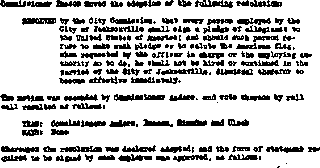
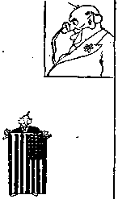
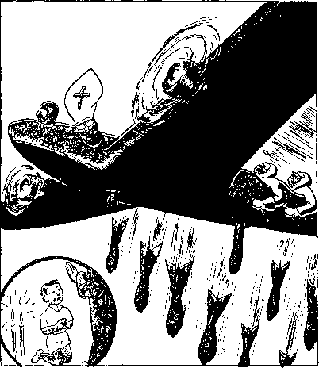

Contents
Real Patriots in Philadelphia
and Jacksonville
It’s Happening Here Every Day
Federal Court (Judge Maris on the Bench)
Upholds Right to Refuse to Salute
California
“Away Down South in Dixie”
“A Modem Voltaire” in Mobile, Ala.
Flirting with Fascism (Catholic Action)
in Hillsborough County, Fla.
Your Questions Answered
by Judge Rutherford
A Communication from Rumania
Why the Bishops Back Franco
Canadian Press Putrescence
By Trail and Stream and Garden Path
(‘The Mighty Nimrod’)
Winter Chores (Cover Design)
PuMIshed svery other Wedaeeday by
THE GOLDEN AOK PUBLISHING COMPANY, INO.
117 Adams St., Brooklyn, N. T., tj. S. A.
President Clayton J. Woodworth
Vice-President Nathan H. Knorr
Secretary and Treasurer Charlea E. Wagner
Five Cent* a Copy
|1 a year In the United States 11.26 to Canada and ell other countries
NOTICE TO SUBSCRIBERS
Remittance!! For your own safety, remit by postal or express money order. When coin or currency Is lost in the ordinary mails, there is no redress. Remittances from countries other than those named below may be made to the Brooklyn office, but only by international postal money order.
Receipt ofa naw or renewal subscription will be acknowledged only when requested. Notice of Expiration is sent with the Journal one month before subscription expires. Please renew promptly to avoid loss of copies. Send change of address direct to us rather than to the post office. Your request should reach us .at least two weeks before the date of issue with which it is to take effect Send your old as well as the new address. Copies will not be forwarded by the post office to your new address unless extra postage is provided by you.
Published also In Bohemian, Danish, Dutch, Finnish, French, German, Greek, Japanese, Norwegian, Polish, Spanish, Swedish.
OFFICES FOR OTHER COUNTRIES
England 34 Craven Terrace, London, W. 2
Canada 40 Irwin Avenue, Toronto 6, Ontario Australia 7 Beresford Road, Strathfleld, N.S.W. South Africa 623 Boston House, Cape Town
Entered as second-class matter at Brooklyn, N. Y., under the Act of March 8, 1879.
Appetizers
Examination of Would-be Citizen
♦ “Where is Washington?”
“He is dead.”
' ‘ I mean the capital of the United States. ’ ’ ‘ ‘ Oh, they loaned it all to Europe. ’ ’ “Do you promise to support the constitution?”
“Me? How can I? I have a wife and six children to support.”—Exchange.
Spirits of Silkworms
♦ Every year thousands of Japanese Buddhists offer prayers to the spirits of silkworms, cotton plants, cherry trees, sewing needles, and millions of other deities; which makes one glad one is not a Japanese Buddhist. Japan worships the spirits of all soldiers that have died in foreign wars, and now has 130,967 of that kind of gods on the list of deities.
“Probably”
♦ The Chico Record, Chico, California, referring to the arrest of “Reverend Father” J, B, Dermody, of St. John the Baptist Catholic church in Chico, for drunk driving in Yuba City, involving a series of auto crashes, mentions that he was released on $300 bail ‘ ‘ and that he probably would be ordered to appear later”. Probably? Probably? Probably!
How Come, O Bachelor? How Come?
♦ Those were strange words which the bachelor Hitler addressed to the women,of Germany at the Nuremberg Nazi Congress:
Babies are the best way to show your gratitude to me and to all who are working t0 build up the new Rei eh. We have made the men of Fermany more manly and the women mere womanlyA
The American Mercury
♦ The American Mercury, of American Airlines, Inc., leaves Boston 3; 20 p.m,, New York 5:10 p.m., Nashville 9:15 p.m., Dallas 1:30 a.m., Tucson 5:33 a.m., and arrives at Los Angeles at 7:30 a.m. There is corresponding service returning.
Artist’s History of Nazi Party
♦ Sired by Satan, dammed by a harlot, suckled by sodomy,- taught by the Inquisition, honored by Catholic Action, crowned by the Jesuits, hailed by the pope, deified by Hitler, and cursed by all honest men.
CONSOLATION
“And in His name shall the nations hope.”—Matthew 12:21, A. R.V.
Brooklyn, N. ¥., . Wednesday, December 29, 1937
Real Patriots in Philadelphia and Jacksonville
BREAST-BEATERS, Hearst-Americana, goose-steppers, Stalinites, flag-wavers, , child-maulers and Jes-uit-religion-mon gers that would— make America like Rus; sia, Germany and Italy, turn the stars and stripes into a matador’s scarf, deny education to honest and true little Americans, learn a great lesson. That is, they do if they are not solid concrete above the neck.
Federal Judge Maris, Philadelphia, Attorney Edgar W. Waybright, of Jacksonville, Florida, and Gold V. Sanders, editor of the Jacksonville Journal, do all America a great service ; not forgetting the backing of the Baltimore Sun, America’s best-edited paper.
By now almost every newspaper in the United States knows what the Baltimore Sun announced editorially, that is:
Federal Judge Albert B. Maris, in Philadel

Intrmwit t» StgMd by Ea«b Ewplaytr th* City of JjchxwirinOjU MoAJcIptl CtH-pftrtthja ifl Ihrr*l Comity, Florid*, U, $. A-
I hmr, trtfxXt mi »l«2 dw i*d fcrif*. tig ttf nd. Md HvC, OflMdt m4 *-M ti Ctnsxiy, ■ pw ■IltfMiv ■> Uattd cd AiMki, of whi'dr Jie public J fan a ckbps Md will fcpptiT tad Mad A* CmMMcb £* Uwt Skft < Kidas iadMfeU with [Awry tad luxtf (or ilk
(fam — - . - - -
W MjKj 111
The Fascist ukase—
(now rescinded as to conscientious Christiana)
phia yesterday (December 1) ruled that school children cannot be compelled to salute the American flag if they consider tins a violation of their religious beliefs. At last we have found a judge DECEMBER 29. 1937 who takes the First Amendment of the Constitution seriously! It is to be hoped that the case will he promptly appealed and finally taken to the Supreme Court, for we need the word of the highest tribunal on this point. For while it may seem to he frivolous, it isn’t. True, it hurts nobody to salute the flag; but it hurts plenty to have any set of jobholders, even a school board, vested with the power to compel the citizens of a free country to do anything they conscientiously object to doing. The only thing that can justify such compulsion is the threat of great and immediate danger to the country. Judge Maris has done what he could to vindicate the old American belief in freedom of conscience. May he have plenty of imitators.
Essential portions of Judge Maris’ decision appear on page 8 of this publication. Attention is for the moment centered on Jacksonville, Florida, which was ift the limelight when the Maris decision was given.
A manufactured Scare in Florida
To anybody with a sense of humor it is perfectly comical that anybody in the 'Key City* of Florida would fall for the pope’s manufactured scare that the whole world is going Communist. Some gentlemen did; but they are sorry, and should be. Mr. Sanders and Mr. Waybright helped them to be sorry, and had a good time doing it. It is all history now;. So this'is a lesson in history; but it is history still in the making, and ought to be good reading.
In the first place, any person with a little more brains than the average ape can see that there is no choice between Stalin and Hitler; both practiced the murder of those that put them in power; both have a devilish Gestapo spying upon every liberty, even of thought; both maintain hell-holes in the guise of prisons ■where those who have any god except Stalin or Hitler may be tortured or destroyed; both believe themselves monarchs, in the same class with Mussolini and Franco; neither one believes in democracy; both hate the principles for which the United States government stands ; both believe that the state is the whole thing; both regard the common people as merely breeders of cannon fodder or subjects whose chief aim in life must be to keep Stalin and Hitler in their jobs.
Why should Jacksonville wish to ape either Stalin or Hitler? It does not. Sanders and Waybright helped them to see the light. Here is the story: ’
Hitlerism Menaces Jacksonville
Salute to the ruler or to the symbol of his government is the outward manifestation of loyalty to the Fascist state. In addition to much saluting, other earmarks are the stifling of religious liberty and of freedom of speech and press, and subjection of all persons to the demands of the state. No genuine American has any use for Fascism; for it means the loss of dearly bought liberties. Every real Christian abhors Fascism, for its father is the Devil. Religious racketeers, commercial plutocrats and political grafters are the ones who profit through oppression of their fellow men and who welcome the swastika.
Often those who talk loudest and longest in favor of patriotism commit the worst acts of enmity against it. Early in January of this year the American Legion Auxiliary of South Jacksonville, not having anything particularly useful to do, decided to promote the cause of patriotism in the city. It adopted a resolution disclosing to the unsuspecting world that there is "an amazing lack of respect and veneration for the flag". It proposed that every school kid have veneration instilled into him . by means of compulsory saluting of the banner. The decree, therefore, went forth, and the process of venerating the flag by means of enforced obeisance began.
Julian Greer was a pupil in the Lacka wanna school. lie declined to participate in the flag salute because of the command of Jehovah God to abstain from bowing down or render- . ing obeisance to an image or symbol of anything. ,If Julian had smothered his convictions, and hypocritically obeyed the teacher’s command, he would have won the applause and commendation of the educational bigwigs of the town. For remaining true to his convictions this lad was prohibited from‘attendance at the public schools. But even that was not sufficient. His father was a city employee. Apparently-the father did not have enough veneration for the flag and needed to be purged. The city commissioners obligingly adopted a ruling requiring city employees to salute the flag, and J. P. Greer was then thrown out of employment. Both these errors have since been corrected; thanks to Jehovah God primarily, and incidentally to Attorney Edgar W. Waybright and the Jacksonville Journal’s editor, Gold V. Sanders. Waybright rendered essential legal aid gratis and Sanders gave publicity to the unholy inquisition. These men did not propose that their city should be Hitlerized if they could help it. They could help it, and they did.
“Heil der Fuehrer"
In Germany all persons "Heil Hitler”, from early morn until dewy eve. Anywhere and everywhere the national salutation must be given. And Germany has abandoned the code of freedom in entirety. Jacksonville was on the way, but Greer is back in his job and his son is back in school. Both are better Americans than ever, because they learned that good lawyers and good newspapers still fight for justice and the rights of man.
"Save the country from Communism" was the alibi presented by these sup er-pat riots for’ their actions. No one ever heard of a Communist refusing to salute the flag; but it makes a good program, and runs true to the Fascist model. Hitler enslaved the German people to "save them from Communism". Mussolini stole the liberties of the Italians to
"save them from Communism”, Franco mur-■ ders women and children to "save Spain from Communism ”, Japan burglarizes the Chinese to "save China from Communism”, And the Hitler worshipers of Jacksonville would have ' been willing, it seems, to destroy freedom of worship, freedom of speech, and the right to maintain a livelihood, in order to "save Jacksonville from Communism”,
And who are the Jacksonville superpatriots that would deify the flag and regiment the people? "
Number One, R. C. Marshall, superintendent of schodls, and dictator of the board of education. It is not known whether the members of the board and Boss Marshall salute the flag at the regular sessions, but, seeing it is so beneficial in inculcating veneration, it is suggested that they follow along with the rest of the city.
Next in line is Commissioner T. C. Imeson, papa of the rule swastika-izing the city employees, who saw a "Communist” under every shrub and around every corner. He seems to have been Fascist at heart and as such would be in duty bound to believe that Japan is doing a Christian act in slaughtering Chinese men, women and children.
Because some members of the American Legion fought in battle, that organization and its feminine auxiliary consider themselves divinely ordained to promote veneration of the flag by any kind of bulldozing tactics.
Back of the front line offensive is the Roman Catholic Hierarchy. This is not only a religious, but a political organization. It backed Hitler and hoisted him into power. It is in partnership with Mussolini. It supports Franco in the rape of Spain. It is a prime mover in the overthrow of republican government in Brazil. And undoubtedly it is supporting heathen Japan in its brutal attack upon China. In America "Catholic Action” works with the reactionary elements in the campaign to rob Americans of their funda- . mental liberties. Compulsory flag-saluting and enforced oaths of allegiance are important steps in that campaign.
Cowardly and Un-American
The night-shirted Ku Klux Klan, through its grand dragon, hastened to manifest its approval of the Jacksonville campaign to inject veneration of the flag by force. So we see the hooded order and the papal machine [to which DECEMBER 29, 1937 it recently sold its Imperial Palace in Atlanta] joining together in a modern inquisition against Christianity. They would render everything to Caesar, and nothing to God, Thus you have the papal banner flying side by side with the Ku Klux pennant in this campaign to slur and insult the "stars and stripes” by making it a symbol of fear, oppression and intolerance.
That is the motley array ‘which frame mischief by law’ and "gather themselves together against the soul of the righteous, and condemn the innocent blood”, (Psalm 94: 20, 21) The conspiracy was directly framed against Jehovah’s witnesses. It was designed to bring them into disrepute by plastering them as Communists guilty of sedition and disloyalty. It was also aimed at all persons who believe in and support the American principles of freedom and liberty. But Attorney Waybright and Editor Sanders smoked them out and they backed down and gave up Fascism in Jacksonville.
Jehovah’s witnesses are not disloyal. They take the position that Jesus took. He would not salute a flag, nor bow down to an image of any kind. They stand by His proposition to ‘render unto Caesar what belongs to Caesar, and to God what belongs to God’, Courts and lawmakers in free countries have recognized that the law of God is supreme and Should be obeyed even though the law of man is in conflict therewith. It is unfortunate that the city of Jacksonville would permit a few misguided Fascist admirers to even try to veto that principle.
SYMBOLS and SENSE [Jacksonville (Fla.) Journal editorial under date of November 8, 1937]
Suspended from school because he would not salute the flag, Julian Greer, 10, is learning an important lesson.
The lesson is that grown-ups never grow up, some of them.
We speak of the zealots whose idea of honoring the flag is not to honor what it stands for but to flex one’s elbow towards it.
We speak of the "authorities” whoised in 10-year-old Julian’s religious scruple an affront to the sovereign dignity of the United States.
The youngster has an excuse, while the disciplinarians do not. With them, no religious principle is at stake.
(Continued on page 7)
Il’s Happening Here Every Day
WHENEVER you read of Hitler’s Brown-Shirted Nazis throwing political dissenters into filthy concentration camps for long sentences— And whenever.you read of Mussolini’s Black-Shirted Fascists cracking the skulls of those suspected of disagreeing with any of his policies of state—
And when you read of political dissenters in Russia being lined up before a firing squad—
You reflect that ‘ ‘ patriotism ’ ’ in these unhappy lands consists of enforced adulation for the despot in power, and you hitch yourself more comfortably in your arm chair and sigh thankfully, "I’m glad itcan ’thappenhere I ”
But it is happening here nearly every day in some part of the country.
In various parts of America there are mayors, policemen, school boards and other small fry officials Imitating Hitler and Mussol i ti i. Th eir process of thinking and
1 The.rnbjeet ofthii tih) Mt lory, ci mber of *ri*!I tOKn icligof-bcurd. first ilanffested sign* of meets! decay al s not unusual erfEit in tlie life of iny school board. Leading the fisg-salute exercitKt. th* ealijeci'* delioste gray nutter suddenly rjidefr >4 fit a chemical ehajif..-and tooted green. This ti lbs |lr*t liege of ihe dieease, snd is called “BcidO Eoiar Eldest-

3. Tbii' DQtnua fTftU^ ally cojifoonded him, uri^ harfrjff * teprwed d«tn for respect (which he Widda'l get from ft* Mr*. *1 htune), k delutlon that az WM heLiig HiOuted, Ja-itettl q£ Ui* Big,' readied. Thi* (tacfi) [B called “Sidf CriaiH gkri* rottiA
2. This chemical duUtge caused the B'.ibjcH to coo-fu*e Mmrelf with the flajs <ir rsiltu.-, L> r.sjoy vicrirl-oua ptcsEbrc a! being el near an object of n.v*fr catCS,
4, Uli total iae£,ta] decosi-pocitioa inevLtabla, th* tubjec'r hot trrtltlfl an4 greedy fox InfrflM1*! g!6-17, Is profoundly disturbed at (CiJiif a. pupil Yh-j fails to nsLuU,
rt.mav^n\g\ ^5
ck nts.tx-
■ <A A For * Umt
rum
ihorm. ivn'.inarr H
■Bbjf ‘
jrU ty <W4- T^i* lUi»
14 CSlIfd ,LU2il*tonUubw\
K Ifa wW ibwatar* >Mj1y pit*, hi* IflJUtwi tfu U Iftily *t^3*3 ud ba v> *C* <rf 0*4*1-*hick i* bit torttu) *titA bt *<nJ4 DJl Iwn t}|flitli+ of Joit>£. ff* Am-

ill
BRAIN* DtKWiB TNCRFA$Tt*C»-
For the first time in me-Jical history, actual photographs of the 'nmJusil -iisiu tegration of cerebral' tissue, now eo world-wide, him- been obtained.
bJ» diojei'ciO n*i-nH-’i T'Xu fitacj
their means of attaining an end are identical with those of the European dictators.
In some cities they will slam you in jail for even announcing that you intend to speak against the established political parties. It happened to Earl Browder in. Terre Haute, Indiana.
In other cities they will put you on a chain gang for the mere possession of literature un
favorable to the established governmental order. It happened to Jack Barton in Bessemer, Ala.
In many cities they will deny your child an education if it refuses to salute the American flag. It has happened often, and only tliis week it happened to a 12 year old gjr) in Atlanta, Ga.
Dorothy LeoJes, sixth grade pupil, was expelled from school by the Atlanta school board
' because she declined to salute the flag. She is the daughter of Qeorge Leoles, an Americanized Greek who has lived in this country 30 years, and who is a member of ..a religious order called Jehovah’s witnesses. Leoles appeared before the school authorities and gave three reasons why his daughter could not salute the flag and swear allegiance to it; .
-
1. To salute the flag is a violation of the divine commandment, ‘Thou shalt have., no other God before Me. ’
-
2. To salute the flag means in' effect that the person saluting ascribes salvation to it, whereas salvation is of Jehovah God.
-
3. Saluting is a part of the creed of a secret order of so-called patriots, teaching a ritual of patriotism, and from such all true Christians are commanded to turn aside.
The school board was unnhpressed, and expelled the child, adding that “all students must salute the flag and pledge their allegiance • or they will face the same fate.”
Thus we have the spectacle of grown chauvinists on a big city’s school board making themselves ridiculous by attempting to force patriotism upon a child 1
It is the spirit and intent of Hitler, Mussolini and Stalin imported to this so-eallcd free country. It is the rule of the mailed fist, utterly foreign to the original ideals of America. It is the despot’s command of “Think as I think, or else— 1 ’ ’
Such idiocy is blooming throughout America with increasing frequency. But the fact that it happened in Atlanta should cause no surprise. For Atlanta cops only a few weeks ago * met the Communist candidate for president at the railroad station and guarded him between trains to see that he didn’t make a speech!
How can love for America be instilled into school children when one moment they are taught that its flag is the emblem of freedom, and the next are ordered to salute the flag or he kicked out of school ?
How can grown citizens be permeated with greater patriotism when they hear Roosevelt and Landon talk about our Priceless Heritage of Liberty, only to read where one of their opponents for the presidency has been locked in jail and denied his right to speak in behalf of his candidacy?
It is quite possible that readers of these columns are bored with repeated editorials on the freedom of conscience. But our answer is, no subject is of equal importance in this great country for the reason that freedom of conscience is being punished with alarming frequence from one end of the land to the other.
Responsible citizens should protest against every evidence of tyranny of public officials— and, if necessary, fight them.—Dothan Eagle.
Real Patriots in Philadelphia and Jacksonville
(Continued from page 5)
For Greer’s particular convictions we hold no brief, though we do admire the lad and think convictions, by and large, good things to have. .
In connection with the incident, one of the high-ups in the school system here is-reported to have said:
“The American flag is the symbol of the country that has given’everyone the right to worship as they please.’’
Except in point of grammar, we agree; everyone should have the right to worship as he pleases, and that is just the point.
The educator goes on to say:
“The least we can expect is that it (the flag) be saluted.’’
How this follows we cannot quite see. Compulsory saluting the flag is in Julian’s case a violation of the very freedom the flag is supposed to stand for.
WHICH IS THE MENACE?
[Jacksonville (Pla.) Journal editorial under date of November 19, 1937]
America is more menaced by the menace of communism, than by communism itself.
In other words, the real danger is that, while running from communism, we may fall into fascism.
It is our belief that the latter drift is noticeable.
And we have yet to find that communist under our bed!
Dispatches from Paris revive the argument.
Over there, authorities have just discovered large quantities of high explosives, cached away with machine guns. ,
The revolutionary plot was laid to the , "hooded men" of France. And generally viewed as ringleader of the abortive revolution is one La Koque, who heads the outlawed Croix de Feu.
In translation, the French means "Cross of Fire."
A penny for your thoughts!
Yes, the Ku Klux Klan crossed our mind, too, with its hoods and its crosses of fire!
We need not labor the un-American methods of this allegedly super-A meric an order.
To get on with our parallel, we point to reactionary discontent with the present liberal government, discontent in high places.
We’ve all heard it said that what this country really needs is a strong man, a dictator.
Dictators have been the answer to liberalism and labor in more than one country of Europe/ ~
And in each case, the fascists resorted to red-baiting hysteria, to get into power. Solicitors for KKK memberships have lately been using the “menace of communism" as a sales talk.
We are not alarmists. But it is the part of good sense to treat early symptoms.
Mobs in Miami, wearing Klan regalia, raid night clubs and steal cash in moral indignation.
Soon Jacksonville is to be the scene of an open-air "naturalization," or KKK initiation.
IIow do current practices square with founding principles?
What’s to keep the Liberty League from putting on a bedsheet, too?
Federal Court (Judge Maris on the Bench) Upholds Right to Refuse to Salute the Flag
(From The Legal Intelligencer of December 2, 1937)
The plaintiffs, Walter Gobitis and his two minor children, Lillian and William, have filed their bill in equity against the School District of the Borough of Minersville, Schuylkill County, Pa., and against eight individuals, seven of them comprising the hoard of school directors of the school district, and one of them being the superintendent of schools of the district.
The bill avers that the minor plaintiffs, who reside in the Borough of Minersville, attended the publie schools conducted by the defendants prior to November 6, 1935. On that day the defendant school directors adopted a school regulation requiring all teachers and pupils of the schools to salute the American flag as a part of the daily exercises and providing that refusal to salute the flag should be regarded as an act of insubordination and should be dealt with accordingly. Plaintiffs, who are members of a body of Christians known as Jehovah’s witnesses, are conscientiously opposed upon religious grounds to saluting the flag, since they consider such action to be a direct violation of divine commandments laid dowm in the Bible. The minor plaintiffs having been conscientiously unable, because of their religious beliefs and manner of worship, to salute the flag as required by the regulation of the defendant school directors, above referred to, they were on November 6, 1935, expelled by the defendant superintendent of schools from the public schools conducted by the defendants, and by reason thereof have since been unable to attend those schools.
The bill further avers that plaintiff, Walter Gobitis, is financially unable to provide an education for the minor plaintiffs at a private school and that therrefusal of the defendants to permit them to remain in the public schools has damaged him in excess of $3,000. Alleging that the defendants’ regulation violates the fourteenth amendment to the Federal Constitution, in that it, unreasonably restricts the freedom of religious belief and worship and the free exercise thereof of the plaintiffs, the bill seeks an injunction restraining the defendants from enforcing the regulation against the plaintiffs. The defendants have moved to dismiss the bill upon the grounds that a good cause of action is not set forth and that, even if it is, this court has no jurisdiction to entertain it.
In disposing of defendants’ motion the facts set forth in the bill and the inferences properly to be drawn therefrom must be taken to be true.^ Considering them in this light we will first examine the cause of action averred by the bill. It is claimed on behalf of the minor plaintiffs that they have the right to attend the defendants’ public schools; indeed that they are required by law to attend them unless they can secure equivalent education privately. This, however, Walter Gobitis avers he is financially unable to provide. They further contend that the enforcement of defendants’ regulation conditions their right upon their participation in what is to them a religious ceremony to which they are conscientiously opposed, thus depriving them of their liberty of conscience without due process of law. They also say that, since they are required by law to attend defendants’ public schools being financially unable to secure an equivalent education privately, they are by reason of the regulation in question placed under legal compulsion to participate in an act of worship contrary to the dictates of their consciences.
Under section 1414 of the School Code, as recently amended (24 P. S. sec. 1421), the minor plaintiffs are required to attend a day school continuously throughout the entire term during which the public elementary school in their district shall be in session, until they respectively reach 18 years of age. Section 1423 of the School Code (24 P. S. see. 1430) provides that every parent of any child of school age who fails to comply with the provisions of the act regarding compulsory attendance is guilty of a misdemeanor. In the light of these statutory provisions and of section 1 of Art. X of the State Constitution which directs the General Assembly to “provide for the maintenance and support of a thorough and efficient system of public schools, wherein all the children of this Commonwealth above the age of six years may be educated”, we concluded that the minor plaintiffs have a right to attend the public schools and indeed a duty to do so if they are unable to secure an equivalent education privately.
-Section 3 of Art. I of the Constitution of Pennsylvania provides that “All men have a natural and indefeasible right to worship Almighty God according to the dictates of their own consciences; ... no human authority can, in any case whatever, control or DECEMBER £9, 1937
interfere with the rights of conscience . . .” This is but the expression of the full and free right which, as Mr. Justice Miller said in Watson v. Jones, 80 U. S. 679, in this country is conceded to all “to entertain any religious ' belief, to practice any religious principle, and to teach any religious doctrine which does not violate the laws of morality and property, and which does not infringe personal rights ’
■ The right of conscience referred to in the Pennsylvania Constitution was defined by Chief Justice Gibson in Commonwealth v. Lesher, 17 S. & R. 155, to be “a right to worship the Supreme Being according to the dictates of the heart; to adopt any creed or hold any opinion whatever on the subject of religion ; and to do, or forbear to do, any act for conscience’ sake, the doing or forbearing of whieh, is not prejudicial to public weal”. In these words that eminent jurist clearly stated the principle which underlies the constitutional provisions of all the States and which is one of the fundamental bases upon which our Nation was founded, namely, that individuals have the right not only to entertain any religious belief but also to do or refrain from doing any act on conscientious grounds, which does not prejudice safety, morals, property or personal rights of the people.
In applying this principle it is obvious that the individual concerned must be the judge of the validity of his own religious beliefs. Liberty of conscience means liberty for each individual to decide for himself what is to him religious. If an individual sincerely bases his acts or refusals to act on religious grounds they must be accepted as such and may only be interfered with if it becomes necessary to do so in connection with the exercise of the police power, that is, if it appears that the public safety, health or morals or property or personal rights will be prejudiced by them. To perrqit public officers to determine whether . the views of individuals sincerely held and , their acts sincerely undertaken on religious grounds are in fact based on convictions religious in character would be to sound the death knell of religious liberty. To such a pernicious and alien doctrine this court cannot subscribe.
In the present case the bill avers that the refusal of the minor plaintiffs to salute the flag is based on conscientious religious grounds. It seems obvious that their refusal to salute the flag in school exercises could not in any way prejudice or imperil the public safety, health or morals or the property or personal rights of their fellow-citizens. Certainly no such suggestion was made by the defendants at the argument. However, in the view we have taken, such prejudice or peril, if it exists, is a matter of defense. Consequently we must hold on this motion that the action of the minor defendants in refusing for conscience’ sake to salute the flag, a ceremony which they deem an act of worship to be rendered to God alone, was within the rights of conscience guaranteed to them by the Pennsylvania Constitution. The conclusion is inescapable that the requirement of that ceremony as a condition of the exercising of their right or the performance of their duty to attend the public schools violated the Pennsylvania Constitution and infringed the liberty guaranteed them by the fourteenth amendment.
We are aware that a number of courts have reached a contrary conclusion: Hering v. State Board of Education, 117 N. J. L. 455, 189 A. 629, affirmed N. J. L.; 194 A. 177; Leoles v. Landers, Ga., 192 S. B. 218; Nichols v. Mayor and School Committee of Lynn, Mass., 7 N. E. (2d) 577. In each of these eases it was held that the salute to the flag could have no religious significance. In so holding, however, it appears to us that the courts which decided these cases overlooked the fundamental principle of religious liberty to which we have referred; namely, that no man, even though he be a school director or a judge, is empowered to censor another’s religious convictions or set bounds to the areas of human conduct in which those convictions should be permitted to control his actions, unless compelled to do so by an overriding public necessity which properly requires the exercise of the public power. Furthermore it appears that the courts in these eases largely relied on Hamilton v. Regents, 293 U. S. 245, in which the Supreme Court held that a regulation of the University of California making military training compulsory for all students did not unduly infringe the liberty of students who are opposed to war and military training on religious grounds. That decision, however, was placed upon the ground that although the right to entertain the beliefs, to adhere to the principles and to teach the doctrines on which these students based their objections to military training is included in the religious liberty of the individual, that liberty had not been infringed by the regulation in question since the objecting students were not required by law to attend the. university, and in any event the right of the State in the interest of public safety to require its citizens to prepare for its defense by force of arms was paramount to their right to religious liberty. In that case Mr. Justice Butler said;
There need be no attempt to enumerate or comprehensively to define what is included in the "liberty” protected by the due process clause. Undoubtedly it does ineJude the right to entertain the beliefs, to adhere to the principles, and to teach the doctrines on which these students base their objections to the order prescribing military training : Meyer v. Nebraska, 262 U. S. 390, 399; Pierce v. Society of Sisters, 268 U. S. 510; Stromberg v. California, 283 U. S. 359, 368-369; Near v. Minnesota, 283 U. S. 697, 707. The fact that they are able to pay their way in this university but not in any other institution in California is without significance upon any constitutional or other question here involved. California has not drafted or called them to attend the university. They are seeking education offered by the State and at the same time t insisting that they be excluded from the prescribed course solely upon grounds of their religious beliefs and conscientious objections to war, preparation for war, and military education. Taken on the basis of the facts alleged in the petition, appellants’ contentions amount to no more than an assertion that the due process clause of the fourteenth amendment as a safeguard of "liberty” confers the right to be students in the State university free from obligation to take military training as one of the conditions of attendance. -
Viewed in the light of our decisions that proposition must at once be put aside as untenable.
The authority conferred by the Pennsylvania School Code upon the defendant school district is to adopt “and enforce such reasonable rules and regulations as it may deem necessary and proper . . . regarding the conduct and deportment of all pupils attending the public schools in the district”. (24 P, S. sec. 338) It will thus be seen that the power conferred upon the defendant school directors was to adopt such regulations as are reasonable. There is in the present bill, however, no averment that the regulation in question is unreasonable. Relief is not sought upon the ground that the defendants are without power under the School Code to adopt and enforce the regulation or that they are prohibited by it from doing so. Obviously it cannot be said that the regulation is unreasonable per se or that considered generally it is repugnant to the Constitution or laws of the State. It is only in its application to the minor plaintiffs that it violates the constitutional guarantees. What we have here is an action by public officers, agents of the State, within the scope of the power conferred upon them by statute
' which when applied to these plaintiffs deprives them of their liberty of conscience in violation of the fourteenth amendment. Such an abuse of . power presents a case arising under the Constitution, and this court accordingly has jurisdiction. . . .
California
Child Persecution
THE San Leandro board of education joins the ranks of school directors who would sentence children to illiteracy as a punishment for the religious beliefs of their parents.
The six-year-old girl in this ease, it is no surprise to find, is the child of members of the sect called Jehovah’s witnesses. They interpret the Bible to command them to pay homage to no inanimate object. Therefore they do not salute flags, not because they have any grudge against Hags, but because they think God has forbidden such homage. No question of patriotism or lack of it is involved. This child, following her parents’ teachings, refused to join in the flag salute in a San Leandro school.
And so the high and mighty San Leandro board of education says this child shall suffer for obedience to her parents. She shall be deprived of an education: The board’s agent, School Superintendent Cartwright, put it in words like these: ‘ ‘ If the mother won’t let her child salute the flag, she’ll have to keep her home. ’ ’
Evidently the San Ldandro board holds it is good for citizenship to bar children from schooling. Evidently it believes that patriotism can be clubbed into citizens. Evidently, too, it has not heard about the Sacramento case in which Judge Shields held that a board of education Bas no authority under the law for excluding a child from school because of refusal to salute the flag.
Fortunately, however, this child will not be deprived of her schooling and will not have to go to law to get it. Just across the line in Oakland is a more enlightened board of education which does not believe in punishing children for the religious beliefs of their parents. Superintendent E. W. Jacobsen of Oakland says she can attend one of his schools where she need not join, if her religion so dictates, in the custom of saluting the flag.
There are such hoards and happily they seem to be in the majority. Jehovah’s witnesses appear to be fairly well scattered over the country. Yet it is only an occasional board of education that suffers from the inferiority complexes that inspire persecution of children because their parents happen to have queer religious notions.—San Francisco Chronic^.
Common Sense in Oakland
♦ H. R. Hewitt, Oakland, California, thinks that when men in public life show good old American common sense they should be commended for it. Hence a letter to the Oakland Tribune in which he said;
“Salute, bow down, worship—or else—I” The issue of supremacy, old and new—an object to bow to, patriotic music, pay homage to, salute, venerate —or eke! (Daniel, chapter 3)
Free America! Thank God the Oakland superintendent of schools is man enough and American enough to stand by the democracy our forefathers suffered to establish. We want none of this Nazi, Fascist, “Heil,” “Saluta”—or else tyranny in America.
Jehovah’s witnesses are law-abiding citizens— not Fascists or Communists—respecting though not saluting any man-made symbol—a Christian organization, not in any sense religious. Believers in divine prophecy and the Bible and not in custom or tradition (Jeremiah 10:3), hence not a eult. Followers of the Prince of Peace “doing violence to no man,” so of no danger to the welfare of the nation. Stable citizens in a time of national and world unrest.
So it is to he “unhealthy” for Christians to “obey God” in a “Christian” nation (Acts 4:19 and 5: 29-42). Remember the Almighty God is still supreme, and there are still many real Americans left. Shall we he ruled by the whims of men who crack the whip and threaten and coerce ns, or by the Christian standards of.liberty? When God says no, shall we add yes ? (Deuteronomy 4:2; 5: 8,9)
Let us keep America—“the land of the free and the home of the brave.”
“Away Down South in Dixie”
THE substitution of foolishness for patriotism still goes on. Down in Atlanta the _ father of a sixth grade girl is contemplating legal action to force the reinstatement of his daughter who was expelled from the public schools because, as a member of the sect of Jehovah’s witnesses, she refused to salute the American flag.
Jehovah’s witnesses may be a people who are mistaken in their faith that they should pledge allegiance to nothing less than God. But certainly they are no more mistaken than those patrioteers who would expel from the public schools children who refuse to be legally compelled to make a patriotic gesture. Patriotism is not to be secured by legal compulsion. Patriotism springs spontaneously from . love of country. It is a matter of the heart, not of compulsory, public display. If sixth graders were foreign spies or other enemies of this country, they would promptly salute the flag to cover their wicked machinations. Those who refuse to salute and subject them” selves to expulsion by so doing may better display the stuff of which loyalty is made than the docile who submit to a ridiculous law.
These flag saluting statutes which require the expulsion of children who refuse to salute serve no purpose save that of making the law ridiculous. And if making the law of the land ridiculous is the way to make patriots, it is, to say the least, a brand-new way to make them.—Raleigh (N.C.) News and Observer.
Powell Gets Sarcastic
-
♦ Ordinarily, Grover Powell is not sarcastic, but he recently sent in a clipping showing that Clifford Jackson, Negro laborer, had been , offered 75c a day wages, and, having declined it, was then sent to the chain gang for a year. Powell says, and it really seems sarcastic;
He was offered the magnificent sum of 75c per day for hard labor. He worked one day. It seems that he was given two meals, which were charged to him at the rate of 25e each, which left Clifford with 25c with which to get the third meal, pay his house rent, buy his clothes, and purchase the other things necessary to run his house, if he lives in a house. By careful planning with this goodly sum he may be able to save enough to see the circus once in a lifetime. The offer was so attractive you would wonder why the sheriff had not resigned and applied for the job.
Reid Gets Sarcastic, Also
-
♦ Charles 8. Reid, Woodbury, Ga., tvrote a note to the Atlanta Journal that is enough to make all the fish-eating patriots get together and oil up the machinery of the Inquisition. With biting sarcasm he said:
It is gratifying to know that at last unpatriotic Americans are to be 'made patriotic in spite of themselves, thanks to the action of the Georgia board of education. No movement in the history df this nation is so important as the late ruling of the board, requiring the United States flag to wave over each schoolhouse throughout the state, and the teachers and pupils be required to do proper obeisance.
No nation ean continue to hold its own among other nations without militaristic principles. We learned this from Germany, Italy and Russia, Unlike religion, patriotism can no longer be considered a matter of the heart, but a thing for coercion. We come to realize that no American naturally is patriotic. Patriotism is just not bora in him. Hence, use force. This instills the most perfect quality. It is made indelible by the branding iron, as it were. And there is no more spectacular expression of this militaristic loyalty than flag saluting. The flag should be raised over every christening font, and the infant candidate be made to raise its tiny hands in salutation as part of the baptismal ceremony. Thus it would early accustom itself to the form of lip and gesture service.
Want a Job on the Decker Place?
-
♦ Maybe you want a job on the Decker place, Clarksdale, Miss. There are some drawbacks, if you get in debt to Mr. Decker. J. W. Wiggins, colored man, got in debt to the tune of $175, and (so it seems) in order to prevent his' running away without paying it, it was necessary to have his good wife chained to her bed with a trace ebain. The chain was locked around her neek. This seems a little irregular, even in the state of the blowtorch murders.
The Great Norris Dam
♦ The great Norris darn, in the Tennessee valley, cost $36,000,000. The structure is 253 feet in height, and will make a narrow lake with a shore line of 800 miles. One village site will be buried 200 feet under the waters, but the village, with all bridges and roads and railroads, has been moved, including 3,500 families and their homes. Trees also have been removed.
A “Reverend” Burglar and His Accessory ♦ At Clarksville, Tenn., the “Reverend” J. C. Kates broke into the house of his son, Anthony Kates, and took two Riches books, one Enemies book and some booklets, amounting, in all, to $1.15 value, and took the books to the Roman Catholic chief of police, one J. E. Robinson, and that gentleman, when inquiry was made for the books, and their return was requested, showdd himself an accessory to the crime of the “Reverend” by making the following statement, showing utter contempt for the laws he swore to uphold;
I put them in the furnace, and if you want more, tell the Lord to send you more.
Head No Part of the Body
♦ In the murder trial in Florida where the Tampa chief of police and seven uniformed policemen were being tried on charges of murdering Joseph Shoemaker because they did not like his politics, the judge on the bench refused to admit evidence that Shoemaker was struck a severe blow on the head with a blunt instrument, on the ground that for legal purposes the head is not a part of the body. In this case it must be admitted that, though the judge is a Yale graduate, he afforded convincing evidence that it is no part of his.
Not Supposed to Tell What He Knew
♦ M. L. Williams, patrol-wagon driver, Tampa police, cross-examined into admitting that he knew two of the police involved in the Shoemaker murder, explained why he had not told the truth in the first place. The explanation is of interest as showing the kind of chief of police with which Tampa was blessed:
I was under the impression I was not supposed to tell what I knew. Chief Tilts worth gave me the - impression I was not supposed to tell. I was just afraid to tell. I didn’t care to lose my job.
Four Years’ Imprisonment for Murder ♦ The five Florida policemen who conspired to murder and did murder Joseph Shoemaker finally got four years in prison. That is something, anyway, and shows that it is still possible in the United States for gangsters in uniform to at least get a portion of the punishment which is their due. This punishment of the Tampa police ought to at least create an impression at West I’alm Beach, across the state, where there are other gangsters of the same general characteristics.
This Pig Was in Hard Luck
♦ At Fargo, Ga., this last year a little pig was born that was morally sure to be killed some <jay and be eaten by two-legged custodians of things of the earth. AVlieii he got to weigh 40 pounds he was grabbed by an eagle and carried away into the skies, eventually, perchance, to be killed some more, this time for the benefit of young eagles. Things were going along fine, when a railway agent took a bead on the eagle and killed him. Now, if you were a 40-pound pig and being carried squealing through the air several hundred feet off the ground, how would you feel if your airplane were suddenly punctured? Well, that is how the pig felt. He couldn’t fly, and the result was that he fell and busted. Who got the pig after that is not stated, but who can deny that here was a pig that played in hard luek ? Landon and Hearst and Coughlin should look him up.
Blow-Torch Civilization Since 1882
♦ The lynchings since 1882 are: Alabama, 842; Arkansas, 294; Florida, 266; Georgia, 508; Kentucky, 213; Louisiana, 388; Mississippi, 545; Missouri, 116; Oklahoma, 160; South Carolina, 159; Tennessee, 240; Texas, 492; Virginia, 104; total 3,827. Of the number thus murdered by mobs, 513 were whites. Organizations of white women in all of the above states (except Florida) have declared against mob violence and in favor of the passage of an anti-lynching law. Virginia has a law making counties financially liable for mob murders, and there has not been a single lynching in the state since that law was passed.
A Dollar a Day in Warren County
♦ A dollar a day in Warren county, Georgia, is all that an A-l cotton picker can make at the going rate of 40 cents a hundred pounds. When farmers of Glasscock county came into the county and offered 75 cents a hundred the Warren county farmers stood guard over the workers and fired in the air to make it clear that 40 cents would be all that would be paid.
Homicide in Mississippi
♦ The homicide rate in Mississippi is sixty-four times that of England, Scotland and Wales. With 10,000 homicides in the United States annually, the total number of legal executions is but 170. The other 9,830 murderers go free.
“A Modern Voltaire” in Mobile^ Alabama
A GENTLEMAN in Mobile, Alabama, signing himself “A Modern Voltaire” wrote two letters to the Mobile Post, bne under date of May 17, 1937, and one under date of June 4, 1937, which were so good: that the Post published both of them. They appear below, one following the other. Both have since been used as handbills or dodgers in Mobile, and must have made many people think.
Glancing over the afternoon’s Press every Saturday, you may find advertised, under the caption “Services in Mobile Houses of Worship”,'thirty-nine or more different denominations. All of these sects claim they are the tbue exponents of the Christian Gospels.
On April 17 two of the agents of “Jehovah’s witnesses”, a religious organization, were arrested. These men claim they were assaulted and their property destroyed, without due process of law. This case should be investigated by the eounty solicitor and grand jury, and if the allegations be true, the police officials responsible for the illegal act should be indicted.
If the public can stand thirty-nine different denominations all haranguing every Sunday and disagreeing with each other, where is the harm of another cult joining the procession of the Sentient Saviours of Sinners?
Bishop Brent of the Episcopal Church has pertinently asked: “Why is it necessary to have eightyseven denominations to impress the very simple and veritable teachings of Jesus?” This question is not for the writer to decide. But he asks in the name of common sense, justice and tolerance: Why give the right of free speech to thirty-nine or more and deny it to one?
Every Sunday the methods and aims of Jehovah’s witnesses are broadcast by Judge Rutherford, over the radio. Are the ears of Mobile’s theological public so very much more sensitive than the Radio Broadcast’s auditors?
Must illiterate policemen and a biased police court be arbiters in a so universally discussed question? The solicitor is paid by the taxpayers to enforce the law which protects life, Eberty and property. Is he going to be deaf, dumb and blind on this occasion, as he has on many others?
The “witnesses of Jehovah” were given a permit to operate a radio truck. Afterwards, Commissioner Bates canceled the permit because the radio “denounced” another religion. Does Commissioner Bates send his police department every Sunday to seo that the other thirty-nine denominations do not “denounce” each other? No. Then why should he indict the “witnesses of Jehovah”?
The writer is fully competent to judge in this case—because he is not a member of any of the “thirty and nine jarring sects”. He believes in the much quoted epigram attributed to Voltaire:
“I may not agree with all you say, but will defend to the death your right to say it.”
This embraces all there is, in the Declaration of Independence, the Constitution of the United States, freedom of speech and freedom of the press.
On May 21, in “Letters to The Editor,” your readers’ attention was called to an account, in the daily papers, of an assault on two members of “the witnesses of Jehovah,” a religious cult, and their arrest by the city police department. The arrest was made for the alleged distribution of literature containing “an attack on another ‘religion’,” as stated by Commissioner Bates, These people violated no state, national, county or city law.
The writer has read carefully their circulars and pamphlets distributed here, which violate none of the articles in the Federal and State constitutions. But the police department violated, in making the arrest and assault, all the laws of fair play, decency and freedom of speech, freedom of conscience and entirely the spirit of democracy and of the Constitution.
Their literature discussed a doctrinal teaching of a religious organization, claiming it had no authority in any of the editions of the Bible. The unique claim of the “witnesses of Jehovah” was:
No blame was attached to the sect discussed and its members who taught the dogma—but “the Devil, Satan”, who tempted them. This contention was sustained by numerous quotations from the Scriptures. Cardinal Gibbons and other high Church dignitaries were quoted and replied to.
Since so many billions of dollars are annually spent, the world over, educating preachers and teachers to combat this wicked, despicable, diabolical diplomacy of Satan—-and with such poor success, one wonders then why the valiant defenders of the Faith should desire the arrest and assault of other kindred knights of the cross who wish to cross swords with so powerful an enemy of mankind: “His Satanic Majesty.”
The writer advises the over-zealous, religiously inclined, pions police prowlers to make a careful study of Dante and Milton that they may beeome familiar with the devious deceitful dealings of this “Satan-Devil” and direct all their energy against him, and desist in their assaults and arrests of Jehovah’s brave knights, who desire nothing! but to be good and do good, who even pray for and forgive their enemies—a quality so very rare in the present-day philosophy of Polities, Theology, Dollars and Sex, which makes hypocrites of us ad. The writer trusts the Shades of Shakespeare will pardon him for the liberty taken.
Flirting with Fascism (Catholic Action) in Hillsborough County, Fla.
NO AMERICAN is a true American unless he is liberty-loving and just, especially to minorities, and particularly if those minorities are little folks. The attention of true Americans in Hillsborough county, Florida, is now directed to conditions in the school district of Lutz, a suburb of Tampa, by a letter which speaks for itself. Following this letter from law-abiding taxpayers of, Florida there follows a memorial addressed to the educational officials (public servants) of the county, some of whom are arrogating to themselves authority that is characteristic of eeele-eiastieally approved dictators, while the people who pay their salaries are denied' the rights to which they and their children are justly entitled.
Tampa, Florida December 1, 1937 Watch Tower Bible & Tract Society
117 Adams Street
Brooklyn, N. Y.
Dear Brethren :
Yesterday morning -the children of Bro. and Sr. Blieeh (six in all) who reside at Lutz, Florida, a suburb of Tampa, were expelled by the principal of the Lutz Junior High School for not saluting the flag. Also, at the same time the two children . of Bro. and Sr. Frizzell, Jonadabs who have recently become interested, were expelled from the same school for the same reason.
The principal sent a note to Bro. Blieeh as enclosed, but no note was sent to the parents of the Frizzell children. The principal only stated to them that they were expelled for not saluting by order of the county superintendent. When the little girl told him that she lived four miles from the school and had no way of getting home and her mother did not want them to walk on the highway alone, he said: “I don’t eare what you do, but you can’t stay on these grounds. You will have to get out and stay out until you salute the flag. We will not allow anyone to be on the school grounds who does not respect the flag by saluting.” They told him again that their parents would not allow them on the public highway alone with so many ears upon the main U.S. highway. He replied again: “I don’t care; get off these school grounds now.”
Since no note was sent to the parents, we decided to send these children hack to school this morning with a note to the principal as follows;
“Dear Sie:
Will you kindly explain to me why my children were sent home yesterday?”
When the children entered the schoolroom he said to them: “What are you doing here? You get out of this room and off these grounds immediately.” They replied that they had a note for him. He took the note, read it, and replied as per the enclosed note and then said to them as if they were dogs, “Now get out and stay out!”
The names of the children are as follows:
David Bliech 14 George L. Blieeh 7
Les Bur B. Bliech 11 Tommie W. Blieeh 6
Betty A. Blieeh 10 Harvey If. Frizzell 13
Jimmie J. Blieeh 9 June Frizzell 9
The name of the principal of the school is: H. P. Chambers, Lutz, Florida, e/o Junior High School.
The name of the county superintendent of Hillsborough county, who ordered them suspended is: E. L. Robinson, Co. Supt. of Schools, e/o Madison St. Jligh School, Tampa, Florida.
Will keep you informed and shall await your instructions.
In Jehovah’s service, ■ t E. D. Orbell,
' Company Servant,
A MEMORIAL proposing
Safeguarding of the Right to Worship ' Almighty God in the State of Florida
To the Board of Public Instruction for the County of Hillsborough, State of Florida; and E. L. Robinson, County Superintendent of Schools; and H. P, Chambers, Principal of Junior High School, Lutz, Florida:
On November 30, 1937, the following pupils were barred from attendance at the Lutz public schools:
Age . . Age
David Bliech 14 George L. Bliech 7 Les Bur B. Bliech 11 Tommie W. Bliech 6 Betty A. Blieeh 10 Harvey M. Frizzell 13 Jimmie J. Blieeh 9 June Frizzell 9
.The reason given for their suspension is that they declined to salute the United States flag.
It is true that they have refused to salute the flag. ‘
These pupils are children of Jehovah’s witnesses.
Jehovah’s witnesses are earnest and sincere Christians who do the will of Almighty God as that is written in the Bible. They have entered into a covenant or agreement with Jehovah God, wherein they have consecrated themselves to do His will and to walk in the footsteps of Jesus Christ. By virtue of this covenant it is obligatory upon them to obey the law of God, which is found in His Word, the Bible.
It is taught and sincerely believed by Jehovah ’s witnesses that w true follower of Jesus Christ can salute any flag, for the following reasons, to wit:
Thou shalt have no other gods before me. Thou shalt not make unto thee any graven image, or any likeness of any thing that is in heaven above, or that is in the earth beneath, or that is in the water under the earth: thou shalt not bow down thyself to them, nor serve them . . .
The United States flag is the image, or ^emblem, of the American nation.
Every true follower of Jesus Christ must obey the commandment above stated. He cannot, and will not bow down, render obeisance, or commit any act of worship, reverence, or honor, to the image of tiie government. To do so would in due time mean his eternal destruction.—Acts 3:22, 23.
The Manual of Information for prospective citizens published by the National Society of the Daughters of the American Revolution states:
America was settled by lovers of liberty, America expects those who come here to love and revere and defend the flag which protects them. It is the emblem of a free people.
This citation designates the flag as the protector of the people. Many adulatory expressions ascribing to the flag sacredness, purity, justice, innocence, hardiness, valor, vigilance - and perseverance further establish its deification and exaltation as the savior of the people.
A true follower of Jesus Christ rejoices in the salvation and protection of Almighty God. (Psalm 20:5) Such a person will not insult the Creator of heaven and earth by ascribing - salvation and protection to any man, or to anything made by man.
The situation is similar to that of Pagan Rome. Caesar was the emperor. He was deified and salvation was ascribed to him. He, or his statue, was saluted in manner similar to the salute to the flag. He was exalted, honored, and saluted, and the flag today is exalted, honored and saluted,in. similar manner.
A true follower of Jesus Christ will salute no god but Jehovah, the Almighty God, and will ascribe salvation and protection to Him alone.
Concerning relationship of the sincere follower of Christ to religions the law of Almighty God prescribes ps follows:
Be ye not unequally yoked together with unbelievers: for what fellowship hath righteousness with unrighteousness? and what communion bath light with darkness?
And what concord hath Christ with Belial? or what part hath he that helieveth with an infidel ?
And what agreement hath the temple of God with idols? for ye are the temple of the living God; as God hath said, I will dwell in them, and walk in them; and I will be their God, and they shall be my people.
Wherefore eome out from among them, and be ye separate, saith the Lord, and touch not the unclean thing; and I will receive you.— 2 Corinthians C: 14-17.
In the days of Pagan Rome the authorities demanded obeisance and a pledge of allegiance to the deified emperor. This was given by the sprinkling of some incense on a fire before a statue—an image of the emperor. It was demanded of everyone. But the early Christians refused to give the salute. They would not bow down, salute, or render obeisance to Caesar. They separated themselves and would have no part or parcel with the religio-patriotic cult of that day.
This present attempt to force obedient followers of Jesus Christ to join in the services of a patriotic cult is an attempt to force a religion on them in opposition to their conscientious belief and their choice to obey the Godgiven command. Sueh attempted forcing is revolting to a reasonable mind, and is directly contrary to the constitutional guarantees of freedom of worship of Almighty God. It is an endeavor to coerce people, especially school children, to worship in accordance with a ritual of ceremonial patriotism. It is contrary to common sense, common decency, and the (Continued on page £0)
Your Questions Answered
QUESTION: I believe in God and Christ Jesus and I want to do the right thing, but how may I know that I am doing right and what is the will of God ?
Answer: The Bible contains the correct answer to your question. Therein it is written: "Thy wrord is a lamp unto my feet, and a light unto my path.” A lamp is a vessel that sheds forth light when properly used, but without the light it is of no benefit. The language in the foregoing scripture is symbolic, of course, and means that God's Word, the Bible, contains the true facts and correct information for man’s guidance, and the light thereon means that it is made understandable to those who obey God’s law. One not only must have the Bible, but must have an honest and sincere desire to understand its meaning, and he must obey the Lord as he learns the right way, in order to have an understanding. Therefore he must have the lamp (the Bible) and an understanding thereof, which is the light, in order to benefit. It is written: 1 ‘ Good and upright is the Lord: therefore will he teach sinners in the way. . . . The meek will he teach his way. . . . What man is he that feareth the Lord? him shall he teach in the way that he shall choose.” If one really believes in God and Christ Jesus he will try to obey the commandments of the Lord. He will believe and acknowledge that the Bible contains the truth. In order to get a knowledge of the Bible one must have a sincere desire to " learn and he must be willing to do it as the Lord has provided. To be meek within the meaning of the foregoing text means to be - teachable, having a desire to learn and the willingness to be taught. God himself brings to pass the physical facts in fulfillment of His prophetic Word. Such physical facts when read by those who love God and His Word enable them to get the light on or understanding of the Scriptures. These physical facts and the Bible together furnish a means of understanding. By the grace of the Lord books are published by the Watch Tower Bible & Tract Society setting out the physical facts that every person can learn if he tries, and set alongside these physical facts is the Bible citation wherein the true meaning is found. Anyone, therefore, who honestly and sincerely desires to know the truth must take his Bible, and together with the books explaining the Bible and citing the texts he provides himself with a lamp of God and gets the light thereon, and by the Lord’s grace he is enabled to understand what the Word of God means. Thus the WTord of God, the Bible, becomes both a lamp to his feet and a light for his pathway and which serves to guide him in exactly the right way to go.-Psalms 119:105; 25: 8, 9,12.
For many centuries the Roman Catholic Hierarchy has claimed that the Catholic organization is the only teacher of the Bible, That claim is entirely false, because the Scriptures show that God and Christ Jesus are the teachers of those who desire to know the truth. If the Catholic priests ever knew or understood the Bible, they don’t teach it to the people, but, on the contrary, try to keep the people in ignorance of what the Scriptures really teach. The Bible discloses the wickedness, fraud and deceit practiced by the Catholic organization, the Hierarchy; and therefore the Hierarchy does not desire the people to know the truth. Furthermore, God informs man that he must not trust men to teach Kim the right way, but must trust in the Lord, acknowledge Him and obey His commandments, as it is written: "Trust in the Lord with all thine heart; and lean not unto thine own understanding. In all thy ways acknowledge him, and he shall direct thy paths.” What course of procedure should an honest person take to get an understanding of the truth and to know just what is the right way for him to go? He must believe that Jehovah is the Almighty God, the Creator of heaven and earth and the liewarder of those who serve Him, and hence the Giver of every good and perfect gift; he must believe that Jesus Christ is the Son of Jehovah God and by God’s will and commandment He is the Savior of mankind; he must believe that the Bible, is the Word of truth given to man for his instruction in the way of righteousness; he must agree to do God’s will by giving his heart’s affection to God, and then he must pray God through Christ Jesus that he may learn the truth. He then begins intelligently to study the Bible together with the aforementioned
Bible helps, the books furnished which show where the texts of the Bible are to be found and set forth the facts which show God’s means of fulfilling His prophetic utterances. He does not need some pretended priest to teach him these truths, because he can learn them himself from God’s Word. Besides, the light of truth is not given to those who are wicked; as it is written: ‘'Light is sown for the righteous.*' (Psalm 97:11) Only those who believe on Jehovah God and Christ Jesus and who devote themselves to the Lord and Christ by consecrating themselves to do God’s will are made righteous by reason of their faith in God and in Christ. Concerning Abraham it is written: "And being fully persuaded that what He had promised. He was able also to perform. And therefore it was imputed to him for righteousness. Now it was not written for his sake alone, that it was imputed to him; but for us also, to whom it shall be imputed, if we believe on him that raised up Jesus our Lord from the dead.” (Romans 4:21-24) It is such persons that God promises to guide in the way that they shall go. To such the Lord has imputed righteousness, and He promises to teach and does teach through Christ Jesus such persons, giving them an understanding of the Scriptures, and shows them the right way to go. Clergymen who use the name of the Lord and Christ Jesus for the purpose of carrying on a racket by which the people are robbed of their money and defrauded of other valuable things are wholly unrighteous, and they cannot help you to understand the Bible. The Scriptures are not written to show partiality to one class of people and permit one class to rob another. The Word of God is written for the benefit of all men who believe on Jehovah and Christ Jesus. If one takes the course above pointed out lie learns the truth as to what is the right way to go; and then if he obeys the Lord to the best of his ability God will guide him in the right way and show him what is always the right thing to do. For this reason it is written in the Bible: "All scripture is given by inspiration of God, and is profitable for doctrine, for reproof, for correction, for instruction in righteousness; that the man of God may be perfect, throughly furnished unto all good works.” (2 Timothy 3:16,17) Your Bible and the books showing you where to find the texts, and which books are published by the Watch Tower Bible & Tract Society, will enable every person who tries to get an understanding of the truth and to be guided in the right way. The truth always brings consolation, because the truth proceeds from God; and concerning Jehovah God as the great Comforter of those who obey Him it is written: "Blessed be God, even the Father of our Lord Jesus Christ, the Father of mercies, and the God of all comfort; who comforteth us in all our tribulation, that we may be able to comfort them which are in any trouble, by the comfort wherewith we ourselves are comforted of God.”—2 Cor. 1:3,4.
Miscellany
Government Income and Outgo .
♦ Based on the budget estimates for 1936-37, one-third of the government income is from income taxes; another third is from tariff, internal revenue, tobacco, alcoholic beverage and estate taxes, about equally distributed; 19 percent comes from borrowings; and the rest is miscellany. The outgoes are one-third for relief, social security and the AAA; another third is for public works, debt retirement, interest on public debt and miscellaneous; and the remaining third is for pensions, national defense and operation of government.
Elixir of Sulfanilamide
♦ The latest contraption to cure streptococcic infections is or was Elixir of Sulfanilamide, made at Bristol, Tenn. It fixed the streptococci all right, and everything else with which it came in contact. It stops the operation of the kidneys, and the patient dies. Of the fool stuff 327 shipments were sent out, and in a shorttime about 100 deaths were attributed to it. At Tulsa, Okla., eight out of ten persons' that took the medicine died. The government got on the job and called in all the shipments that could be traced.
Chinese God in Hard Luck
♦ The Minneapolis Journal contains a photograph of a Chinese god, toppled from his pedestal, but still in an erect position in the ruins of the private home where he was once da bigga eheesa and is now ona da buma,
CONSOLATION
Is This Religious Liberty?
♦ More than 200 children are being- denied access to American schools because they have conscientious scruples to saluting the flag. Children of Jehovah’s witnesses refuse to salute the flag because they believe that it is the symbol of the authority of the nation which sets itself over against the authority of God in its violations of ‘1 Thou shalt not kill” and other commandments. In New Jersey in one instance a child was suspended from school and the parents then fined because their child was not present. In various states children have been beaten, choked, expelled from school, sent to state reformatories as delinquents and otherwise punished. In Atlanta, Georgia, a high-school girl was expelled from school, the Ku Klux Klan paraded in front of her father’s store, and he was finally bankrupted because neither he nor his family would “bow down to any graven image” or agree with other Americans that the flag is “sacred”, that it must be “revered” or “adored”. This, they say with a good deal of truth, is idolatry. In Germany, members of this sect refuse to salute with the “Heil Hitler” sign. Three thousand are in concentration camps.—Fellowship, June, 1937.
Blaming It on God, as Usual,
♦ Isidoro Cardinal Goma y Tomas, Spanish Roman Catholic primate, declared that the Hierarchy’s war in Spain was visited upon "the nation by God, in expiation for Spain’s sins, and before it is finished will cost at least one million lives. This is all very interesting, in view of the fact -that it is well known to all honest persons that the war was fomented by and in the Roman Catholic Church and is being fought to help that blood-sucking insti. tution get back where it can bleed the. poor Spanish people as of yore. Incidentally, if memory serves aright, the salary of the abovenamed gent, paid out of the funds of the Spanish Republic, was $600,000 a year.
Sddium Vapor Lamps
♦ The use of 1,079 thousand-candle-power sodium vapor lamps on the Oakland-San Francisco bridge has proved a complete success. Even when fogs have been thickest, automobiles proceeded safely on their way at 45 miles per hour. The light is yellow7. Californians anticipate night lighting of highways soon,
Franco Ashamed of Guernica
♦ It is said that even Franco the Butcher is ashamed of the wanton butchery of women, babies and other noneombatants by the German airplanes at Guernica, and that all the credit for this worse than beastly business should go to the “Fuehrer”, whose murderers so skillfully planned and executed it. The Germans certainly are efficient. One young German was in Berlin April 22, the next day he was in Rome, the next in Seville, Spain, and the next he was killing babies and their mothers at Guernica, This young aviator was captured. In one of the shelters for women and children fifty were trapped and burned alive. Unexploded incendiary shells, made of aluminum, and weighing nearly two pounds each, were found; they were made in 1936 at the Rheindorf factory and were liberally stamped with German eagles. It is estimated that in the 3| hours of the bombing more than 3,000 projectile”----dropped. All the
wounded in the hospital were killed by bombs. The true inward reason for the German slaughter at Guernica is that Hitler wants access to the iron ore for which this region is famous.
The Evacuation of Malaga
♦ When the pope’s German and Italian planes conquered Malaga, Spain, 150,000 men, women and children left to march 100 miles on a white flint road without food. At least 5,000 of the children were under ten years of age, many of them barefoot and clad in a single garment. Arrived at Almeria, the refugees slept huddled on the main street so closely that an auto could pass only with difficulty. The Italian and German planes followed the refugees and killed many children by dropping bombs upon little folks who, the day before, had stood in line waiting for a cup of preserved milk and a handful of dry bread that they might live another day. This is Fascism (Catholic Action) inpraetiee. Twenty thousand Italian troops were the first to enter Malaga.
Mississippi Has Improved
♦ Despite the recent blow-torch murders in Mississippi, the state has really improved since the forefathers solemnly passed the law punishing any Negro who could read or write by 500 lashes on the back and amputation of a thumb, besides fining his master $500.
(Continued from page 16) .
well established principles of freedom of worship, freedom of conscience, and freedom of speech.
Further reasons and Scriptural proofs are set forth in a pamphlet entitled Loyalty, several copies of which pamphlet are presented herewith. '
In behalf of the children herein named, and in the interest of all people who believe in the American principles of freedom and liberty, we come to you and ask that the suspension order against these pupils be set aside; and as reasons for such request we submit that requiring any pupil to salute the flag on pain of expulsion from school, when such pupil conscientiously believes it to be wrong to salute,
-
(1) will not accomplish any useful purpose, and :
-
(2) is a denial of such pupil's right to worship Almighty God according to the dictates of conscience, which rig. \ is guaranteed, to each person by the Consti. htion of the State of Florida and by the Fourt, wth Amendment to the Federal Constitution.
Patriotism Cannot Be Taught by Law
Recently this nation went through the “noble experiment” of trying to teach temperance by law. It didn’t work. Neither can patriotism and devotion fo the flag be taught by force of the law. The flag then becomes the symbol of force; the emblem of the iron hand; the image of dictatorial rule.
Does anyone for one moment imagine that-such methods will foster love and respect for the flag?
Permit us to quote from the Raleigh (N.C.) News and Observer:
To pass a law requiring that little children must formally salute the Sag under penalty of ostracism from the public schools, is to make a pompous mockery of the natural patriotism of American children. It is to put love of country into the category of such things good for children as castor oil and neck washing. It is to make the flag not a thing of the American child’s natural reverence and adoration, not a symbol of enthusiasm, but a symbol of force, It is to make the flag not a banner to which the love of the child goes up, but a standard from which force may come down hard upon the child. In a perverse world, children are entitled to their share of perversity, and it is to dare that perversity to say to the child: ‘You’ll love this flag or get your breeches burned.’ And if children, being human, don’t love that which they are ordered to
20 ' love pnder, penalty of punishment, then not the communists, but the pompous, foolish patrioteers, who would make the flag as ridiculous as themselves, will be to blame.
This kind of action wall not be instrumental in the instilling of patriotism and love of country. It will teach parrot patriotism, deceit, and cringing hypocrisy. It will foster and foment a blaze of persecution of the people of Jehovah God, which will not furnish good advertising for the State of Florida.
A good law brings forth beneficial results. A bad law produces evil results.
Compulsory flag saluting is wrong in principle. Its operation works harm to innocent children. •
In this country during the past two years enforcement of such regulations has brought a train of abuses resulting in actual torture and brutal persecution. Here are some of the results of this method of inculcating patriotism :
-
1. Denial of the right of education to approximately two hundred children of Jehovah’s witnesses.
-
2. Beating, choking, reviling and torture of children.
-
3. Sentencing children to reformatory.
-
4, Stigmatizing parents with criminal charges and imprisonment.
-
5. Depriving parents of the opportunity to earn 'a livelihood.
On the-same day (November 30, 1937) that the eight children herein named were suspended from the Lutz public schools, the Boston (Mass.) Transcript commented on astounding conditions in Germany, under the following page-wide headline: ■
Reich Will Seize Children of the International Bible Sect Adherents ; Who Oppose Nazi Ideals
Court Decision Holds Parents Are Enemies
Verdict Sats Custody bt State ’ la Necessary to End “Menace”
(The parents referred to in the foregoing headlines as “International Bible sect adherents” are Jehovah’s witnesses.) Thus, with a callous, cruel,, inhuman decree a district court of Nazi "Germany breaks up a family and incarcerates harmless, God-fearing children. Why? Solely because those children de
’ consolation
eline to join in the Nazi salute required by the state. ' . • '
In Florida; expulsion of eight children from the Lutz schools is but the first step toward similar Faseistie and Communistic action.
In other states of the American Union attempts have been made to destroy family ties and commit children of Jehovah’s witnesses to penal institutions because those children refused to salute the flag.
Is Florida ready to adopt the methods of Germany, Italy and Russia?
Unconstitutional
The last word from the courts of the United States on the subject of compulsory Hag saluting came one day after the suspension of the children of Jehovah’s witnesses from the Lutz schools. ■
In a ringing, clear-cut declaration of civil rights, the United States District Court for the Eastern District of Pennsylvania ruled that no school board has authority under the State and Federal Constitutions to require the flag salute of children who conscientiously object to saluting a flag. [For that high court's decision see page 8.]
This means that children of God-fearing parents, duly informed concerning requirements of Almighty God, have the right to believe that flag saluting is wrong in principle; and they also have the right to act in accordance with such belief, to wit, to refuse to salute any flag. It also means that no school board has authority to deny those children such rights. The school board doing so denies the children religious freedom in violation of the Constitution of Florida and in violation of the Fourteenth Amendment to the Federal Constitution. '
Additionally, we bring to your attention another paragraph" from the same Federal Court’s decision, which, according to editorial comment of the New York Herald-Tribune, ‘1 rings with the echo of a great principle, once greatly fought out and established at the heart of American democracy”:
■ ■ In these days when religious intolerance is again rearing its ugly head in other parts of the world it is of the utmost importance that the liberties guaranteed to our citizens by the fundamental law be preserved from all encroachment. . .
DECEMBER 29, 1937
To each member of the school board of Hillsborough county and other officials herein concerned we present with this Memorial a printed copy of the complete text of the decision of the United States District Court. We ask that you read and consider this carefully.
In conclusion, wre submit that you have two alternatives: You may decide to let the matter of the suspended children continue as it is. In so doing, you will continue to deny children of God-fearing parents the right to education in the public schools; you will continue to deprive those children of the rights of religious freedom and freedom to worship Almighty God "whose name alone is JEHOVAH”; you will continue to besmirch and degrade the emblem of the Republic which you insist the children shall revere; and you will also continue to contradict the fundamental law of the Republic, as well as of the State of Florida, and instead you will uphold and strengthen enforcement of the ‘pernicious and alien doctrines’ which now serve to grind in the dust millions of defenseless mortals in those ‘ ‘ modem” Communistic and Faseistie states over-, seas.
. On the other hand, why not boldly take thp initiative in restoring "freedom to worship Almighty God ’ ’ in Florida to the original high plane selected for that inalienable right by the State’s founders in their Bill of Rights?
For your decision, therefore, these vital issues are now respectfully submitted;
[Signed by parents and by local representatives of Jehovah’s witnesses.]
Those Dreadful Bible Students
♦ Bible scholars rank among the worst enemies of the Third Reich and belong to the same category as Communists, according to the state prosecutor, Dr. Kayser:
Bible scholars do everything possible to undermine the National-Socialist State. They refuse to enter the party and even decline to work for the Reich organization.
Such people cannot be tolerated in a NationalSocialist State. By permitting them to go on, this State would dig its own grave. The organization of Bible scholars hardly differs from the illegal organization of the Communists.—A dispatch from Frankfurt-on-Main, Germany, published in London Sunday Express.
A Communication from Rumania (From German Watchtower)
DURING three months of the past winter, with 117 auxiliary pioneers, we were privileged to carry through an “action” in a district never before witnessed to. Great enthusiasm possessed the publishers, whereas the Haman class were highly incensed and filled with terror. The clergy demanded at the Ministry of Education that an ordinance be issued against us, and they actually gained their objective on the 6th of November, when in all districts public notices were posted which stated that the distribution of these pamphlets is strictly forbidden.
At this time our “action” was just in full swing and the publishers kept right on working in their territories. Meanwhile the Haman class often were on the streets all day long seeking to hinder the activity. It was a real attack upon the work, up to now perhaps the greatest in Rumania; but the opponents met with strong resistance from our side.
From headquarters we issued three letters of instruction to the brethren to continue in । the work, disregarding the ordinance, because its issuance by the Ministry of Education is illegal; It was a severe battle. Several of the publishers were arrested, others beaten until bloody. The literature was seized. Various brethren were sentenced, but immediately entered an appeal.
Thus was the message proclaimed with energy, and the work still goes on. No human ordinance can bring it to a standstill. One brother wrote that interest in the message has increased since the ordinance forbidding our work was issued. '
During the last three months the brethren reported over 250 arrests. Thirty-five publishers were sentenced to pay small fines. To date not .all cases have been disposed of. The police department seized much literature but steadfastly refused to render a receipt for The same. They do not, however, remand us to the courts, knowing well that their conduct is lawless, and that cases are decided mostly in our favor. They content themselves with taking our literature away from us and then remain silent. Nevertheless, we are causing the police department much worry, in that we compel them to enter complaint against us after seizing our literature.
The Catholics and the Orthodox clergy, for some time now, seem to know of nothing else to preach than that nobody should read our pamphlets. In some churches clergymen exhibited to the people the pamphlets, then tore them to pieces and enjoined them to do the same. Other clergymen even went so far as to burn the pamphlets in front of the church and to tell the people to kill the distributors of these writings, saying that they would assume the responsibility therefor.
The Haman class in Rumania is much more degraded than the police department. Often policemen ask the brethren if they are Jehovah’s witnesses. If the brethren answer in the affirmative, then they are told, “You should depart from here as quick as possible, for we have here two great ‘Devil ministers’ who belong to the Hitler party. If you get into their hands^ then you would fare badly.” Generally these policemen return our literature at once, so that the brethren may pass on quickly before they are detected by these ministers.
In Rumania ninety percent of the clergy are for Hitler. They had always expected that Hitler would bring welfare to them. Now they realize that they cannot set great hopes upon him any longer. They are greatly angered because their works are publicly exposed; and the people who have read our writings no longer come to church. On Sundays many churches are often empty, only a few old women still come to mass.
Blasphemous Claim
♦ It is claimed in many parts of Austria that the kingdom that is to destroy all other kingdoms, and stand forever, as stated by Daniel the prophet, is the infamous Nazi government of Catholic Action,
Municipal Corporations as Gangsters ♦ A Florida subscriber says of the municipal corporations commonly known as cities:
They are a strong tool for the Devil. Whenever I read of the persecutions of Jehovah’s witnesses, I generally see that the persecutions are the work of city officials, not state officials. Gangs of city officials running without restraint are a menace to the nation. Of all corporations, municipal corporations are the worst. They strike directly at the homes, the heart of the nation.
CONSOLATION
Why the Bishops Back Franco
By John McGovern, Roman Catholic M. P. for Glasgow
CATHOLIC opinion has been turned against the Spanish people by allegations of the torture and murder of priests and nuns, and of the burning to the ground of religious institutions.
I had an uneasy feeling about these charges. I was not prepared to accept them from journals which can never be depended upon from the working-class standpoint. I therefore offered to the National Council of the Independent Labor Party to investigate them on the spot in Spain. I have been there for four weeks, accompanied by a reliable interpreter.
I have traveled over six thousand miles, I have interviewed hundreds of people—-bankers, schoolmasters, doctors, lawyers, merchants, Trade Union officials, Socialists, soldiers, peasants in the orange groves and vine fields, ordinary folk in their homes. I have gone' where the very depths of poverty and desperation were to be found in order to understand the hearts and minds of the people and to discover their reasons for antagonism and bitterness.
Let Me Remind Catholics . . .
Let me remind Catholics, in the first place, that when they charge the Spanish workers with burning down churches, shooting bishops and priests and outraging nmis, they arc making charges against a population among whom Catholicism is the dominant religion.
I jet me remind them, in the second place, that Franco, the Fascist leader, who is supposed to be a defender of Catholicism, has , used the Moors whom it took Catholic Spain eight centuries to drive out. "When Franco began to use these troops he realized he must cover up his action with some special propaganda to mobilize world Catholic opinion on his side. Ue realized that if ho could produce stories of atrocities against priests and nuns that were sufficiently vile he could commit any crime in the name of religion.
Let us look at this war by Franco for civilization and Christianity.
I went to the front in Madrid. From a distance of less than 300 yards I saw men engaged in bloody battle. I saw Moors brought in as prisoners. I saw Italian airmen blowing DECEMBER 29, 1937 defenseless people to smithereens by bomb and machine gun.
In a prohibited area I visited a tenement seven stories high. A bomb had passed through the roof to the basement: a bomb 500 pounds in weight, filled with the most deadly explosives scientists could invent. That bomb, dropped from two thousand feet, had an impact force of over 300 tons, and it blew to bits 37 men, women and children. I saw their limbs dug out. I saw the blood-saturated clothing in their beds. I saw children’s heads being boxed in the mortuary.
This is Franco’s fight for Civilization and Christianity! This is the Franco for whom Roman Catholic bishops and priests in this country are raising money in the churches— money to buy bombs and explosives in order to blow Catholic workers and their children to pieces in Madrid.
There was another kind of bomb which fell in Madrid whilst I was there. It was an Italian bomb. It didn’t explode. Inside it was glycerine, but no additional explosive material. The bomb was opened by the technicians and inside it was found this note: “Your Italian brothers do not want to murder you. ’ ’
I have pictures which I hope to show on the screen later. They show children mutilated while playing in the streets; mothers machine-gunned and bombed by Italian and German airmen while waiting in queues for their daily rations. Children to the number of 139 were done to death, their heads and limbs blown to the opposite side of the street.
These evil deeds are backed by bishops and priests in Spain. I have indisputable evidence. Here is a photograph of a gun taken from a Moor, and on the gun is fixed the badge of the Sacred Heart. Here is a bag taken from a Moor. On it is inscribed pictures of the Sacred Host.
Could religion be prostituted further? A bishop addresses the Moorish troops near Burgos and, blessing them, says: “You will have a special place in Paradise for your part in this struggle.”
At a Trial of Catholics
I asked the Minister of Justice in Barcelona, Senor Andre Nin, to be allowed to go to the courts and hear cases on trial. The first case I
heard was illuminating. Six men were charged 'with having Fascist uniforms and with being in possession of arms on July 19, when the Fascist rebellion broke out. One of them was ill; he was sent back to hospital. The other five were tried and their story was simple and tragic.
They said they belonged to the Catholic Fascist Youth Organization. The day before the rebellion they were sent to a room at the university and given uniforms and arms. They told how they were sent to get their uniforms and arms by their parish priest. The basis of the Catholic Fascist Youth Organization was a pledge that they should Bot belong to any Labor, Trade Union or" Socialist organization or have any sympathies with such.
They all admitted their crime. They had been guilty of taking part in a- Fascist revolt against the elected government; It was obvious that they were alive to the danger that death would be the penalty. One of them was a boy of sixteen; I felt sorry for him.
They were all found guilty. The prosecutor demanded the death penalty. The court was composed of a lawyer as president and twelve others drawn from working-class organizations. They rejected the demand for the death penalty. The prisoners were sentenced to thirty years’ imprisonment. Everyone knows that this sentence will remain to the end of the struggle, but that an amnesty will be granted when the working class win and are secure.
On my second visit to the court four monks were charged with firing on Government airplanes with a machine-gun from the roof of a small monastery. They admitted that the firing took place, but denied that they did the firing. There were eight monks in the monastery with a priest in charge. Four escaped. Of the four arrested, three were attempting to escape and resisted strongly. The fourth, a young monk of 25 years, submitted himself to arrest quietly and said: “ I have done nothing. You can examine me. My conscience is clear.”
Even the prosecutor asked for the liberation of the young monk. For the other three he demanded the death penalty. The court was cleared; then after ten minutes the decision was taken. Three of them were found guilty and one not guilty. The one was liberated ; the three were sentenced to thirty years’ imprisonment.
These trials provided me with conclusive evidence that the “Church” [these quotation marks added] and the priests had sided with the Fascists. Let me pass on to further evidence.
I saw many churches that were burned— at least with the interiors gutted. Others, including a large cathedral, one of the finest in the world, were untouched.
In and around Valencia there are few churches that have been burned. In Barcelona there are many. I set out to find why they had been burned. I looked at the names of business firms near a burned church, I said: Here is a lawyer, here a dentist, here a merchant, here a small shopkeeper. In the house near the school lives the schoolmaster. I will go to them and say: “Can you tell me why this church was burned
This particular church dominates the Rum-bias, one of the leading boulevards in Barcelona. It juts into the center of this broad street and commands the center of the town south and north. Each of these men, chosen at random, gave me the same answer when I asked why the church was burned. They all said: “Well, the church was used as a Fascist center. Machine guns were posted in it north and south. Fascist officers manned the guns, and every opening of it was occupied by rifles. ’ ’
Remember, these people I interviewed were Catholics. One old banker said: “My heart bleeds for the way my religion has been prostituted for material gain and political domination. ’ ’
It was the same story, the same simple and tragic story, in every district I toured. I could not get a single denial of the charge that the Fascists had used the churches as fortresses.
The effect of this has been disastrous for the “Church”. In Valencia a film was being shown: “Storm over Mexico.” There was ah incident where clergymen were repressing the peasants and workers. As it flashed on the screen every man and woman, every boy and girl, seemed to rise en masse and shake their fists, calling out something I couldn’t understand except one word “curas,” which means “clergy.” I asked the meaning of the full phrase. It was: “Down with the clergy.”
In one of the trials I attended there were from 400 to 500 people densely packed at the back. When the word “curas” was mentioned every human being cleared his mouth as though he wanted to spit. It was a sign of the loathing which the clergy have brought on themselves by their conduct.
The people were not against religion. Many to whopi 1 spoke said that their religion was as strong as ever, but it had been abused by the clergy on behalf of the landowners and capitalists of Spain.

Missionaries. of the Hierarchy
Despite all this the working-class leaders are protecting the religious leaders from bodily harm. There was the case of the Roman Catholic bishop of. Barcclona. There was a crowd of tens of thousands, some say of nearly 100,000, outside his palace demanding his life. Durruti, the Anarchist leader (who afterwards met his death outside the gates of Madrid), came upon the scene with only twenty armed men. lie addressed the crowd from the steps of the palaeo: “Let us have no nonsense of this kind. We have to direct ourselves to other tasks in the days that lie ahead.” He brought out the bishop, put him in a motor car and handed him to the Government of Catalonia, who placed him on an Italian warship. Five hundred priests and monks were placed on the same warship. Hundreds of nuns were escorted over the frontier to safety.
The Catholic. Press said for a week or two that that bishop of Barcelona had been shot. Afterwards it reported that he had turned up in Home. But the Catholic Press never told of how the Catalan government protected the bishop, the priests and nuns and gave them personal security.
This bishop was protected in this way although at the general election, along with the bishop of Valencia, he ordered a three-days’ prayer by the whole of the Catholic people for the return of the Fascist right wing. lie said
that if they were not returned it would be a crime against God! .
This is the atmosphere in which the feeling against the “Church” has arisen in Spain. But this is not the worst that has to be told.
The “Church” has itself become an institution of capitalist ownership and exploitation. I will tell this sordid story. It will be difficult for the English or Scottish Catholic to believe, but it is true. And here let me interpose this: I have been authorized by the Trade Union Movement in Catalonia to say that if the Catholics in this country doubt these statements, safe passage and conduct will be promised to any delegation or commission to Spain, however reactionary its members, whom British Catholics like to appoint. They will have the fullest opportunity to get the facts for themselves and to make up their own minds whether I am speaking the truth or not. .
To return to my story. Now that the Catalan government and the trade unions have taken over the industries, they are making a complete inventory of the previous holders of stock. In 1931 the Republic laid it down that the “Church” must divest itself of any holdings in industry. It gave the “Church” two years to get rid of the stock.
Church as Capitalist Institution
How did the “Church” carry out the law? It appointed from an inner circle five men-—I have their names—to hold the stock on behalf of the “Church”. They were decoy ducks, nominees without capital. Of these five, three have been examined by the new People’s Tribunals as Fascists. They admitted that they did not personally own one single penny of all their nominal holdings.
What did they hold? They held a considerable amount of the stock of the Underground, the trams, the buses, the railroads, and most of the worst slum property in Barcelona.
They owned land—the land of which the peasants are starved. Even at a Catholic Young Men’s gathering in Glasgow recently a man who had come from Spain said that the poverty of the peasants was the worst in the world. The ''Church” paid the peasants 2 pesetas a day, or 5s. a week in our money.
I went to many peasants and often their families had never been able to buy meat. I met a man who had not eaten flesh for five years. I saw the children. The story of their poverty was written, tragic and stark, in their faces and physical bearing. I saw grown men who had a new suit of clothes for their weddings, and fifteen to twenty years after they were wearing the same suit of clothes.
Ten pesetas a day is necessary even for the lowest standard of life—and the “Church” gave these peasant two! Every time there was an upward struggle to better conditions the pulpit denounced the leaders as hirelings of Moscow. It is always easy for reaction to arouse prejudice by using the word “Comr munist”.
The ‘ * Church ’ ’ owned more than transport and land. It controlled the greatest amount of stock in telephones, banksj lumber, contracting, engineering, film production, cinemas, theaters, cafes, hotels, sports grounds, and even dog racing and the bull ring. Every time the dog chased the hare it made a profit for the “Church”. Every time the bull was stabbed to death or a toreador shed his blood, the Jesuits drew a profit.
The “Church” made profits out of mines and electricity. Let me tell the story of electricity. A Swedish capitalist company erected an electricity works in Catalonia. The price for electricity was 35 centimes a unit; but the “ Church’’-owned Spanish electricity firms reduced -the price to 3—they made it impossible for the Swedish firm to function. It had to sell out to the banks. But the banks also were owned by the Jesuits, and the Swedish firm got only an infinitesimal part of its cost.
I have said that the old price for electricity had been 35; the new price 3. But when the .Swedish company was liquidated the price went up, not to 35, but to 60!
There are concerns similar to Woolworth’s in Spain. They call them El Sigla and El Aguila. They are very large concerns, each with about 150 stores and with millions of capital. The greater amount of their stock was owned by the clergy.
There was a cabaret in Saragossa. It was built at a cost ,of £500,000. It was * called “Nuevo Mundo”—the “New World”. It, too, was owned by the clergy. The least said about that cabaret, the better.
Now do you ’understand why the ' ‘ Church ’ ’ in Spain is allied to the Fascists ? The truth is that the Fascist Movement had its birth in the “Church”.
I have pictures (taken before the Fascist revolt) showing that the “Church” was in alliance with the Fascists. There is one with a congregation of armed Fascists. There is another with Fascists on the altar, handing the very cloth that covers the chalice to the priest. They are serving as altar boys.
I can imagine some people saying: “Aye, where did your pictures eome from!” They came from the office of the most responsible Catholic“newspapers in Catalonia. They were taken by me from the files in the office of the “El Correo Catalan”.
But’ there arc Catholics in Spain who protest against the prostitution of religion in this way. I want to draw .your attention to what they say.
I take first the well-known author, Jos6 Bergamin. Ho is an active Catholic, but has been disturbed for several years by the tendencies of the official Catholic World, which was separating itself not only from the people, but from culture as well. He was one of the group which set about the task (to quote his own words) of."reconquering the real Christian values of Spanish life, rooted in the people and in the rich culture which arises spontaneously from the people”. This is the statement of Jose Bergamin:
Separated from the people, the Church placed itself at the side of the aristocracy, the new rich, the landowners, the army. I began to experience a growing repugnance at the interlacing of the Catholic hierarchy with the privileged classes and their politics. The Church had taken a position that was anti-people and anti-Christian. 1
The Church identified itself with the bloody repression and cruel terror of 1934, directed against the workers and the liberals. When the bishops and priests openly supported Fascism, a Christian could not help but oppose them and denounce the three great spiritual falsehoods which were supporting Fascism and destroying culture ih Spain —the official Church, the corrupt aristocracy and bourgeoisie, and the army.
The Church in its real role as Christian, as Catholic, is not under attack anywhere; but we cannot help but fight the Church Fascist, the Church belligerent, because Fascism is the negation of all that is Christian. It denies all the human values that Christianity has fought for through the centuries™all that we associate with liberty and human dignity. We are true to the Church when we drive the heresy of Fascism from the Church.
There is no persecution of the Church. Churches and convents have been closed, in general, as a military measure. Priests succeeded in convincing the women of the convents that the Fascist cause was holy and they permitted' the Fascists to occupy their buildings as bases of attack. Church buildings became forts and arsenals. It is a harsh truth, but none the less a truth, that for months before the Fascist revolt, gatherings in churches were not for prayer, but for incitement to rebellion.
Then there is Don Angel Ossorio y Gallardo, who is probably the leading jurist of Iberia. He is a Catholic and a Conservative. When the monarchy was overthrown he described himself as “a monarchist without a king.” As a lawyer he was given the duty of drafting a constitution for the republic, but it was rejected by Parliament as too conservative. This is his statement:
A Christian cannot be a Fascist, because Christianity, with respect to human personality, is the liberation of the spirit, while Fascism is the negation of liberty, establishment of oppression, rule of force—and not in the interests of the many, but to safeguard the privileged.
A Christian ought not to suffer the name of God to be used to attack a legitimately constituted State, for if he does so he forgets the command, ‘Render unto Caesar that which is Caesar’s.’ A Catholic owes respect and obedience to the Church, but to the Church as the immortal depository of the highest, purest, most generous doctrine that the centuries have hcard—not to be confused with the ecclesiastical degeneration of jewel-laden bishops who drag God into political conflicts and ask His intervention to defeat the Left in elections, thereby lowering God to the level of a combatant, blaspheming his divinity.
Neither must the Church be confused with thV religious orders that hoard millions, whether for the personal use of members or not; nor with clerical or secular persons who fire from the towers of temples, thereby negating their sacred character and involving their destruction; nor with clerics who enter the field armed with rifles or machine guns in contempt of their ministry, which charges them to pray for the peace of all and forbids them to fire on anyone.
A Priest Speaks Out
My final quotation is from Juan Garcia Morales, himself a priest, who explains that be has not been excommunicated nor unfrocked, nor abandoned his religion. He says:
It is sad that at this moment a simple priest must be the one to appeal to Catholics, when there are so many bishops who, though they have always condemned war, have placed themselves on the side of the powerful,
God placed power in our hands; leadership and education; and with these means at our commandj why did the people desert the Church? Don’t blame it on Russian propaganda. Nobody had better means of propaganda than we had. If the people fled the Church it was because they saw the Church’s union with the Caciques (political bosses who maintain the domination of the landlords). Why were there two ehapels in the religious schools, one for the poor children and the other for the rich?
-We cannot do less than protest when millions of pesetas are discovered in the palaces of the bishops, while the poor perish of hunger, beg alms, or go to gather the leavings of the meals in the barracks. A cross of two sticks, a threadbare cassock, and a tin ring, would have sufficed to permit a bishop to fulfil his function. The hatred of the people is not directed at God nor at the Church; it is turned towards their “ministers”. 1
This priest concludes with a dramatic challenge to his bishops:
You are sending through Europe the rumor that Communist and Socialist mobs have seized our land and that Spain is a country in ruin. That is a lie: you spit at Heaven and the spit falls back in your'face.
I conclude my ease. I hope the Catholic Press will not evade the issue; I hope it will answer me instead of attempting to slander me. I have no apology to make. I did not introduce this issue into politics, but, as it has been introduced by the Catholic world, a reply must be made.
I have fought since I was eighteen years of age against clerical domination from the pulpit. I say to Catholics that I am prepared to respect the clergy when they confine themselves to spiritual and moral teaching, but when they step into the arena of politics they must take the same knocks that I am prepared to take.
Afy Question to Catholics
My question to Catholic workers is this: Are you prepared to allow yourselves to be dominated politically and economically? Are
■ you not going to think and act for yourselves on political and economic questions?
The Spanish workers have been driven to regard the. ‘ ‘ Church ’ ’ as their enemy in many parts of Spain. Whcr’e the "Church” has remained on the side of the people they have treated it with respect and reverence. In the Basque Provinces, where the priests have liberal sympathies, they go about their duties unharmed; their churches and monasteries are untouched. They are respected by the people because they have stood with the people in their struggle against tyranny.
Everywhere I went the Spanish workers said to me: “Go back to your country and expose the Fascist lies.” I ask the workers of this country to reject the false propaganda of the Catholic Press and the reactionaries. I ask them to back the heroic workers of Spain —workers like those -who at Barcelona on July 19 advanced without arms against the machine-guns of the Fascists and, even though thousands of them wrnre slaughtered, went on and on—and won. They crushed Fascism in Barcelona in less than forty-eight hours. They now dominate the position in Catalonia. I call on all the workers of Britain, many of whom are of the same religion as Spain’s heroic fighters for freedom, to back them in their struggle.
Spain
Spain’s Commercial Agent in Australia ♦ Spain’s commercial agent in Australia is Mr. G. Bigas, born and educated in Spain, and in recent years in business both in Spain and in Australia. Discussing conditions in the land of his birth, he said, in part, in an interview at Fremantle, Australia:
The three main elements of the Spanish insurgents are the majority of the Roman Catholic priests, the members of the wealthy classes, and the majority of the army ahd navy officers. The large number of priests are against the Government because it discontinued their pensions, and gave equal rights and freedom to all other religious bodies. Formerly the priests in effect ruled Spain from behind the curtain, they had organized sweated labor, and had been exempt from taxation. The present government ordered the priests to confine their teaching to religion and to refrain from making political utterances from their pulpits, and it also ordered them to pay taxes. I myself am a Roman Catholic, and I say that, although there are some good priests in Spain, the majority of them are spoiling their religion,
A Definition by Franco the Butcher
♦ When Franco the Butcher had made the statement, “Spain had to all intents and purposes become Communist by July,” Jay Allen, of the Chicago Tribune, asked him, “What do you mean by Communism?” and Franco replied, “Oh, strikes. Demands for higher wrages and all that sort of thing.” Franco is the idol of the Roman Hierarchy in Spain, and his intelligence about as high as it goes.
The Pope Overjoyed
♦ The pope is reported to have been overjoyed at the Italian Fascist (Catholic Action) victory at Malaga, Spain, No doubt he also rejoiced greatly at the triumphs scored when his airmen bombed the residents of Malaga who fled to escape the horror of Fascist control. Just to have it in the record, Senor Olivar, Spanish Minister of Justice, gives a lengthy report of the evacuation of Malaga in which occurs the following passage:
Many who could no longer walk strangled their children rather than let them fall into the hands of the Fascists. Then they dashed thejr own heads against the stones or threw themselves under the ■wheels of lorries. Unable to walk, many of the refugees crawled on their knees, leaving a trail of blood behind them as they slowly went forward.
The Italian Victory at Malaga
♦ Referring to ths Italian Fascist (Catholic Action) victory over the forces of the Spanish Republic at Malaga., Spain, an Italian newspaper published at Cremona (whence come the world-famous violins), says:
And now foreign newspapers say that the victory of Malaga is an Italian victory. It is said that in these last times adventurous young men have left from every Italian city, eluding the government’s vigilance to offer their faith, their enthusiasm and their indomitable courage to General Franco, We have no means of checking the accuracy of these statements, but if they are true we can only declare ourselves satisfied and proud.
Canadian Press Putrescence
L’ILLUSTRATION NOUVELLE is supposed to be a newspaper, but has proved itself to be something in the nature of a gutter snipe. Instead of disseminating facts for the benefit of the public, it prefers to hunt and dig up muck and broadcast that as news.
On May 3, 1937, it published a choice bit of mendacity. A large headline carried the statement: "Jehovah’s witnesses Linked with Communism." The article was adorned by a picture of “Joseph Staline”, Communist Number One of Russia. It described a person named J. Splipochuck as a chief propagandist of Jehovah’s witnesses. Splipochuck was alleged to have written a letter setting forth Joseph Stalin as the Great Messiah who would . establish a righteous government on earth.
To make the article seem like the real thing it stated that the postmaster general of Canada certified that there actually was a man named Slipochuk at Winnipeg, Canada.
An investigation was made and it developed that the alleged newspaper did make one statement which was close to the truth. There is a man living on R.F.D. No. 1, Winnipeg, Canada, by the name of John Slipichuk. But John Slipichuk is not one of Jehovah’s witnesses, and never has been one of them. He never attended any meetings of. Jehovah's witnesses and does not know where their meetings are held, and never did know, and had no knowledge as to how their meetings were conducted. John Slipichuk never wrote any letter or message to anyone referring to Jehovah’s witnesses, and said that if there is any letter or paper or document bearing his name with such statements therein it is a forgery.
This information was presented to the Canadian journalistic prevaricator. It was given a chance to do what is honorable, decent and civilized by correcting the falsehoods previously circulated. The management declined to retract, and insisted that they had evidence to substantiate their story. After much urging, they sent a copy of a letter an5 envelope, which document they said "speaks for itself". The document did speak for itself; It spoke volumes, but not in support of the false and libelous article printed in this so-called "newspaper". The letter was not from John Slipichuk nor J. Splipochuck. It was from one named Hope Slipachuk. It was a Communist propaganda letter urging everybody to join the Communist party. It was addressed to the Watch Tower Bible'& Tract Society at Magdeburg, Germany. There is nobody by the name of Hope Slipachuk on R.F.D. No. 1, Winnipeg, Canada, which is supposed to be the point of. origin of this letter.
Th at. is the "conclusive evidence" on which L ’ll lustra tian Nouvelle alleged that Jehovah’s witnesses were linked with Communism and that "J. Splipochuck”, as a chief propagandist thereof, had set forth Joseph Stalin as their great Messiah.
The people who manage and edit that journal of humbug undoubtedly use wisdom and common sense in many of their transactions. It is evident that in this matter they have been too closely connected with some corpulent, skirted pillar saints. They have been running to the priesthood for advice concerning Jehovah’s witnesses, and it is almost conclusively evident that certain buck-nuns have been enthusiastically aiding digging in the mire and muck of falsification and misrepresentation, to spread putridity to the people.
Racketeering in Newfoundland
♦ Certain Protestant clergy last summer were sent out by their superiors to visit the lumbering camps, just one visit to each camp. These men were loaned horses by the companies, and arrangements were made with the foreman at each camp that a man who had no cash could give a note for the amount the clergy had talked him into parting with. The note could be cashed by the clergy and deducted from the- logger’s pay check. The clergy cleaned up big, this being the first time they had ever infested the woods. At that time the men were clearing an average of about $25 a month; this season they all went on strike and doubled their earnings. At present a new lot of clergy have been dumped into the lumbering camps, but the companies have not this year given them permission to collect notes from the men; the clergy get only the spare cash. As it is, they just arrive at the camp in the evening [pay-day evening—nun-like, no doubt—Ed.], talk to the men after the day’s work, but never about God’s kingdom, and are off to another camp the next day.—A Newfoundland lumberman,
By Trail and Stream and Garden Path (‘The Mighty Nimrod’)
(Contributed)
hello, Jane! I had begun to VV think you'd forgotten your cousin.”
“I’ve been busy, Connie. Where’s Lee? And Becky?”
“Here’s Beeky now. Look, darling. Cousin Jane is here.”
Beeky looked up solemnly. “H’lo.”
“Hello, there. How’s my little girl?”
Becky wasn’t sure how to answer that, since she was still feeling the effects of a spanking; so she looked about for some way of changing the subject. Her eyes landed on kitty, and she made a grab for it, pulling its tail till it squalled.
Jane looked at Becky’s mother; but as she seemed to be paying no attention, Jane said, “Don’t hurt the kitty, Becky. You mus'n’t pull its tail.”
Beeky stood up, and watched the kitten run under a chair in the comer. Jane went on into the next room. “Good morning, Lee. What are you doing?”
“Greetings, Jane. I’m cleaning my gun. Just got back from a hunting trip in the mountains. ’ ’
“How exciting! Weren’t you afraid?”
“Afraid of what?”
“Whatever there was to be afraid of.”
“I don’t understand.”
“It must'be pretty dangerous when you need a gun for protection.”
“You know the gun isn’t for protection. It’s for killing animals.”
“How nice! It's best to 'get them before they get you ’, isn’t it ? Did you do any rabbit hunting in season?”
“Quite a lot. I killed as many as the law allows.”
“Grand! It must be a real comfort to know that you’ve brought in meat enough to keep your family from starving.”
“Don’t be foolish, Jane. We didn’t need the food. I just hunt for the sport of it.”
“Oh, I see. It would be fun, wouldn’t it?— so exciting and dangerous! ”
“What do you mean? Dangerous how?”
“Why, matching your size and strength and your one little gun against the big, terrible bunny. To realize that it has at least one chance in a hundred of getting away from you—just think of it! Lee, I didn’t know you were so brave.”
Lee looked up, a little puzzled, but Jane only smiled and went on, “I watched a dog chase a rabbit one day. He ran through bushes and briars, over hills and across logs. He zigzagged from side to side as he followed the brown bit of fur. Suddenly he stopped—the rabbit had ducked into a narrow opening in a thicket and disappeared. No fun in that— the rabbit had an even chance with the dog, and that spoiled all the sport of it, don’t you think? Of course you do.”
Lee moved uneasily. “Are you joking, Jane?”
Jane dropped her teasing smile and said, angrily, “Indeed I’m not joking. I’m serious. Hunting is mean, and wicked, and anything but sporting. It is breaking one of the oldest laws that God gave to man, Remember about Nimrod ? He was a hunter, killing just for the love of it; and Jehovah had no use for him. You modern Nimrods give an animal even less of a chance with your cruel guns.”
“But, Jane, you don’t understand. It’s the fun of seeing if you can hit something that is moving,”
“Yes, and of hitting it, and seeing its soft brown eyes turned on you in agony, or staring at you in death. It’s the fun of taking away a life you can’t give back—a life that wasn’t yours to take. Great fun! One day I saw a hunter kill a large rabbit which I had managed to tame and wdiich I had fed from my oto hand many times. It made me feel sick, Lee.”
Jane looked up as Lee’s wife entered, then added, “If all you brave hunters would get out together in the woods and shoot at each other, everything would be just fine.”
Connie followed Jane out of the room. “You certainly told him. He won’t pay any attention to me, but maybe he will think over what you’ve said.”
-General Motors* Twelve Best-paid Men
♦ The General Motors Corporation pays in salaries to its twelve best-paid men a total of $2,090,310 per year, ranging from $255,505 for Alfred P. Sloan, Jr., down to $141,947 for each of the two Fishers, Alfned and W.A.
Winter Chores—Cover Design for This Number
♦ The sun has set and the crisp cold of the winter day constantly increases. The fall of snow during the day has been unusually heavy and has covered hill and dale, field and wood, with a protecting silvery blanket. It creaks under the wheels of the wagons that pass along the adjacent road, while the breath of the horses gives corroborative proof that the thermometer has dropped to zero, if such corroboration were needed in view of the tingling ears and fingers.
The winter sky overhead is now quite dark, though a pale quarter ’ ion now well above the horizon lightens the landscape sufficiently to mark the oi ies of the farm buildings and of t^e surr >.ing Aes, now bereft of their last leave? .Aust |raing stark and lean about the bamyara, ike sentinels on guard.
It is time for chores anu Dad has bundled himself up in good shape to give attention to this inevitable feature of farm life. He gets to the sheltering warmth of the barn in double-quick time. The biting cold does not lend itself to a leisurely gait. The lanterns shed a cheery glow in the surrounding darkness and shine out across the snow until the door closes behind Dad as he enters the bam. The kids are too young as yet to help out, but it will not be long until they too will take their share of the responsibilities that farm life brings, which in turn fosters that staunchness and dependability which is the backbone of any people.
Electricity has not yet reached this particular farm, though a number of neighboring farms, nearer the main road, have had this improvement in for a long while. Dad hopes, if things go well, to be able to add this convenience in the not too far-off future. He is hopeful in spite of the setbacks and difficulties that depression has brought, for he is strong and healthy and not afraid of hardship and work; and so he hums the strains of a cheerful song as he goes diligently to work to get done with his evening chores.
Start the New Year Right
Send in Your Subscription for THE WATCHTOWER
The WATCHTOWER is a companion magazine to CONSOLATION, and published twice a month. Each issue contains 16 pages, devoted exclusively to a discussion of God’s Word and the fulfillment of Dible prophecy. Every person of good will needs the comfort and strength to be derived from its study.
Of special interest is the leading article which appears in the January 1 issue. This article, entitled “ Jeremiah”, is the speech which Judge Rutherford delivered before a vast audience at Columbus, Ohio, September 18, and which was carried to other large audiences in England, Australia and other parts of the earth by wire and wireless. Everyone who heard it will long remember that memorable occasion, and will certainly want to read and study this speech as it appears in The WATCHTOWER. If you are not now a subscriber, or if your subscription is about to lapse, send in your subscription immediately in order not to miss this important issue.
A year’s subscription is $1.00 in the United States; $1.50 in Canada and other countries.
The Watch Tower, 117 Adams St., Brooklyn, N.Y.
Enclosed find $1.00 ($1.50 in Canada and other countries) for a year's subscription for The WATCH' TOWER. Send it to the following address:
Name ........ -............._.............l................... Street ....................................................................
City ..... — State
- ■
252,577,146 TO DATE
. During the year 1937
22,577,146 books and booklets containing the Kingdom message were distributed throughout the earth. That brings the total since the year 1921 to 252,577,146. These figures alone are amazing. But even more interesting is the account of how these twenty-two million and more books were put out in various countries amidst much opposition. The year’s report for 1937, which appears in the 1938 YEAR BOOK OF JEHOVAH’S WITNESSES, will bring courage and confidence to all those who are devoted to Jehovah and His kingdom and will cause such to ; press forward with greater zeal during the coming year, holdL high the banner of truth in the earth. .
The YEAR BOOK also contains a Scripture text an-1 appr < for each day of the year 1938.
The YEAR BOOK will be mailed to any address on a o.utrm per copy. ; . "
Calendar for 1938
♦ The picture on the 1938 Calendar foe Jehovah’s witnesses is thrilling to those who are for Jehovah and His kingdom. It portrays vividly the two opposing armies lined up for battle, and will remind one constantly of the issue that must be settled shortly of who is supbeme. The picture is in keeping with the Year Text, which also appears on the Calendar, ‘Be not afraid.- the battle is Cod’s.’ Having such assurance, Jehovah’s witnesses and their companions press on boldly in the fight against religionists, and this boldness strikes terror into the hearts of God’s enemies.
The Calendar also contains a letter from Judge Rutherford setting out the important dates of the coming year for those who will engage in the witness for God’s name and kingdom.
Five calendars or more will be mailed to one address at 20e per copy; or singly at 25e per copy. '
The Watch Tower, 117 Adams St., Brooklyn, N. Y.
Please send to the address below
_________ copies of the 1938 Ykar Book of Jf.hovah’s witnesses (50c per copy) _.....Calendar FOR 1938 (25c per copy, or 20c per copy if five or more to one address)
Enclosed Had roniittance of
Name

City
, to be used in spreading the message of God’s kingdom.
....... Street ..
State
32
CONSOLATION